すでに序文において述べたように、統一思想は人類のすべての難問題を根本的に解決することによって、人類を永遠に救うために現れた思想である。ところで、そのような難問題の根本的な解決は、神の属性に関して正確に、また十分に理解することによってのみ可能である。
神の属性に関する理論が原相論である。ここで「原相」とは、原因的存在である神の属性という意味である。神の属性には形の側面と、性質、性稟、能力などの機能的な側面がある。前者を「神相」といい、後者を「神性」という。
従来のキリスト教やイスラム教においても、神の属性を様々に表現してきた。すなわち、全知、全能、遍在性、至善、至美、至真、正義、愛、創造主、審判主などと表現してきた。統一思想の立場から見ても、このような性稟は神の属性に違いない。しかし、神の属性をこのようにとらえるだけでは、現実問題の根本的な解決は不可能である。
統一思想から見るとき、従来のこのような神の属性は神性である。ところが神にはこのような神性のほかに、より重要な属性があるのであり、それが神相である。統一原理でいう「神の二性性相」が、まさにそれである。神の神相と神性を共に、そして正確に理解することによってのみ、人生問題、社会問題、歴史問題、世界問題などの現実問題の根本的な解決が可能になる。
統一思想で扱う神の神相とは、二種類の二性性相（性相と形状、陽性と陰性）と個別相をいい、神の神性とは、心情、ロゴス、創造性をいう。本原相論では「原相の内容」という題目で神相と神性の一つ一つの内容を説明し、「原相の構造」という題目で神相のうち、特に性相と形状の相互関係を扱うことにする。
原相の内容とは神の属性の一つ一つの内容をいうが、ここに神相である性相と形状、陽性と陰性、個別相と、神性である心情、ロゴス、創造性のそれぞれの内容を詳細に、そして具体的に説明することにする。まず神相、次に神性を扱う。
神相は神の属性の形の側面をいう。神は人間の目には見えないが、一定の形または形に成りうる可能性または規定性をもっている。それが神相である。神相には、性相と形状、陽性と陰性の二種類の二性性相と個別相があるが、まず性相と形状について扱うことにする。
神は性相と形状の二性性相をその属性としてもっているが、被造物の性相と形状と区別するために、神の性相と形状を本性相と本形状ともいう。神と万物の関係は創造主と被造物の関係であるが、この関係を原因と結果の関係とも見ることができる。したがって、本性相は被造物の無形的、機能的な側面の根本原因であり、本形状は被造物の有形的、質料的な側面の根本原因である。
神と人間との関係は父子の関係であり、相似の創造によって互いに似ているために、本性相は人間の心に相当し、本形状は人間の体に相当する。ところで、この両者は分離されている別々の属性ではなくて、互いに相対的および相補的な関係で中和（調和）をなして、一つに統一されている(1)。『原理講論』に「神は本性相と本形状の二性性相の中和的主体である」（四六頁）とあるのは、そのことを意味するのである。したがって正確にいえば、神相は本性相と本形状が中和をなした状態なのである。
本体論の観点から見るとき、このような神相観は唯心論でも唯物論でもなく、唯一論または統一論である。なぜなら唯心論は本性相だけが宇宙の根本と見る立場に相当し、唯物論は本形状だけが宇宙の根本と見る立場に相当するからである。次に、性相と形状のそれぞれの内容について詳細に説明することにする。
１ 性相（本性相）
本性相と被造物
神の性相は人間に例えると心に相当し（したがって性相は神の心である）、それがすべての被造物の無形的、機能的な側面の根本原因となっている。すなわち人間の心、動物の本能、植物の生命、鉱物の物理化学的作用性の根本原因である。言い換えれば、神の性相が次元を異にしながら、時間、空間の世界に展開したのが鉱物の物理化学的作用性、植物の生命、動物の本能、人間の心なのである。創造が相似の創造であるからである。
したがってこれは、たとえ極めて低い次元であるとしても、鉱物のような無機物においても神の性相が宿っていることを意味し、植物においては、神の性相が生命の形態でより高い心的機能として現れ（最近、植物にも人間の心に反応する心的作用があることが実験を通じて知られている）、動物の段階においては、肉心（本能）の形態でさらに高い心的機能として現れることを意味する。最近の学者たちの研究によれば、動物にも人間の場合と同様に知情意の機能、すなわち意識があることが明らかにされている（ただし動物が人間と違うのは、動物には人間のような自我意識がないということである）。
本性相の内部構造
神の性相はさらに内的性相と内的形状という二つの部分からなっている。内的性相は機能的部分すなわち主体的部分をいい、内的形状は対象的部分をいう。次に神の内的性相と内的形状を理解しやすくするために、人間の場合を例にして説明する（人間の心は神の心と似ているからである）。
内的性相
内的性相すなわち機能的部分とは知情意の機能をいう。知的機能は認識の能力であって、感性、悟性、理性の機能をいう。情的機能は情感性、すなわち喜怒哀楽などの感情を感ずる能力をいう。意的機能は意欲性、すなわち欲求や決心、決断する能力をいう。このような機能は内的形状に能動的に作用するから、内的性相は内的形状に対して主体的部分となっている。知的機能における感性とは、五官に映るままに知る能力、直感的に認識する能力を意味し、悟性とは、論理的に原因や理由を問いながら知る能力であり、理性とは、普遍的真理を求める能力、または概念化の能力をいう。
この三つの機能をニュートンが万有引力を発見する過程を例に取って説明すれば次のようになる。万有引力の発見に際して、ニュートンは初めにリンゴが落下する事実をそのまま認識し、次にリンゴが落下する原因を考えて大地とリンゴが互いに引き合っていることを理解し、さらにその後、いろいろな実験や観察などの研究を通じて、地球とリンゴだけでなく、宇宙内の質量をもっているすべての物体が互いに引き合っていることを知るようになったのである。このとき、初めの段階の認識が感性的認識であり、第二の段階の認識が悟性的認識であり、第三の段階の認識が理性的認識すなわち普遍的認識なのである。
内的形状
内的形状は本性相内の対象的部分をいうが、それはいくつかの形の要素から成り立っている。そのうち重要なものは観念、概念、原則、数理である。
① 観念
観念は性相の中にある被造物一つ一つの具体的な表象、すなわち映像をいう。人間は経験を通じて客観世界の事物一つ一つの具体的な姿を心の中に映像としてもっているが、その映像がまさに観念である。人間の場合は経験を通じて観念を得るが、神は絶対者であるために本来から無数の観念をもっていたと見るのである。
② 概念
概念は抽象的な映像、すなわち一群の観念に共通的に含まれた要素を映像化したものをいう。例えば犬、鶏、牛、馬、豚などの観念において、共通の要素は「感覚をもって運動する性質」であるが、これを映像化させれば「動物」という抽象的な形を得るようになる。それが概念である。概念には種概念と類概念がある。
③ 原則
原則は被造世界の自然法則および規範法則（価値法則）の根本原因となる法則であって、数多くの自然法則と規範法則は、この原則がそれぞれの自然現象と人間生活を通じて現れる表現形態なのである。あたかも植物において、一粒の種が発芽して幹と枝が伸び、数多くの葉が繁るように、一つの原則から数多くの法則（自然法則と規範法則）が現れるようになったと見るのである。
④ 数理
数理は数的原理という意味であって、自然界の数的現象の究極的原因をいう。すなわち内的形状の中には数的現象の根源となる無数の数、数値、計算法などが観念として含まれているのであり、それが数理である。ピタゴラス（Pythagoras, ca.570-496 B.C.）が「万物の根本は数である」というときの数の概念、また量子力学の大成に貢献したイギリスの物理学者のディラック（P. Dirac, 1902- ）が「神は高度の数学者であり、宇宙を構成する時、極めて高級な数学を使用した(2)」というときの数の概念は、すべて内的形状の数理に該当するということができる。
内的形状の原理的および聖書的根拠
次は以上の内的形状に関する理論が、統一原理および聖書のどこにその根拠があるかを明らかにする。
① 内的形状
「内性は目に見ることはできないが、必ずある種のかたちをもっているから、それに似て、外形も目に見える何らかのかたちとして現れているのである。そこで、前者を性相といい、後者を形状と名づける」（『原理講論』四四頁）。これは目に見える形より前に、性相の中に、すでに形があることを意味するものであり、その性相の中の形がまさに内的形状である。
② 観念と概念
「神は自分のかたちに人を創造された。すなわち、神のかたちに創造し、男と女とに創造された」（創世記一・二七）。神は六日間で万物を創造されたが、一日の創造を終えるとき、「そのようになった」（創世記一・七、九、一一）、「見て、良しとされた」（創世記一・四、一〇、一二、一八、二一、二五）と言われたが、これは、心の中にもっていた観念や概念のとおりに、被造物が造られたことを意味する。
③ 原則（原理）
「（神は）原理によって被造世界を創造され、その原則に従って摂理を行い給う」（『原理講論』一三二頁）、「神は原理の主管者としていまし給い」（同上、七九頁）、「神は原理によって創造された人間を、愛で主管しなければならない」（同上、一一三頁）などに見られるように、神は原則（原理）を立てたのち、人間と万物を創造されたのである。
④ 数理
「被造世界は神の本性相と本形状とが数理的な原則によって、実体的に展開されたものである」（同上、七七頁）、「神は数理性をもっておられる」（同上、七七頁）、「神は数理的にも存在し給う方である」（同上、四四四頁）などに見られるように、神は被造世界を数理的に創造されたのである。このように内的形状を成している形の要素は、みな統一原理（『原理講論』）と聖書にその根拠があることが分かる。
以上は神の本性相内の機能的部分（内的性相）と対象的部分（内的形状）を人間の心に例えながら説明したものである。本性相をこのように詳細に扱うのは、現実問題の解決のためである。例えば内的性相である知情意の機能が心情を中心として作用するとき、愛を基礎とした真美善の価値観が成立するようになる。知情意に対応する価値が真美善である。そして内的形状は知情意の対象的部分であると同時に、本形状とともに、被造物の有形的部分の根本原因になっている。この事実から、現実生活においては、衣食住の物質的生活よりも真美善の価値の生活を優先しなければならないという論理が導かれるのである。
２ 形状（本形状）
次は神の形状（本形状）について説明することにする。
本形状と被造物
神の形状（本形状）を人間に例えれば体に相当するものであり、それはすべての被造物の有形的な要素（側面）の根本原因である。すなわち人間の体、動物の体、植物の細胞・組織、鉱物の原子・分子などの究極的原因なのである。言い換えれば、神の本形状が次元を異にしながら、時間・空間の世界に展開されたものが鉱物の原子・分子であり、植物の細胞・組織であり、動物の体であり、人間の体なのである。これもまた相似の創造によるものである。
このように被造物の有形的要素の根本原因が神の形状であるが、この被造物の有形的要素の根本原因には二つの側面がある。一つは素材（質料）的要素であり、もう一つは無限の形態を取ることのできる可能性（無限応形性）である（万物の形態自体の根本原因は内的形状にある）。
ここで「無限な形態を取ることのできる可能性」（無限応形性）を水の場合を例に取って比喩的に説明する。水自体は他の万物と違って一定の形態がない。しかし容器によっていろいろな形態を現す。三角形の容器では三角形として、四角形の容器では四角形として、円形の容器では円形として現れる。このように水が無形なのは、実はいかなる容器の形態にも応ずる無限な応形性をもっているからである。すなわち水が無形なのは実は無限形であるためである。同様に、神の本形状も、それ自体は一定の形態がないが、いかなる形態の映像にも応ずることのできる応形性、すなわち無限応形性をもっているのである。このように被造物の有形的要素の根本原因には素材的要素と無限応形性の二つがあるが、この二つがまさに神の形状の内容である。
人間の創作活動は、心が構想した型に一致するように可視的な素材（彫刻の場合、石膏または大理石）を変形させる作業であると見ることができる。言い換えれば、創作とは、構想の型に素材を一致させる作業であるということができる。神の創造の場合もこれと同じであるといえる。すなわち、本性相内の内的形状の型または鋳型に無限応形性をもった素材的要素を与えて、一定の具体的な形態を備えさせる作業を創造ということができるのである。
本形状と科学
被造物の有形的側面の根本原因である素材的要素とは、要するに科学の対象である物質の根本原因であるが、素材的要素と科学はいかなる関係にあるのであろうか。
今日の科学は、物質の根本原因は素粒子の前段階としてのエネルギー（物理的エネルギー）であり、そのエネルギーは粒子性と波動性を帯びていると見ている。しかし科学は結果の世界、現象の世界だけを研究の対象としているために、それは究極的な第一原因ではありえない。本原相論は、その究極的原因をまさに本形状であると見るのである。したがって本形状とは、科学的に表現すればエネルギーの前段階であって、それは「前段階エネルギー」（Prior-stage Energy）、または簡単に「前エネルギー(3)」（Pre-Energy）ということができるであろう。
本形状と力
神の創造において、本形状である前エネルギーから授受作用（後述）によって、二つの力（エネルギー）が発生すると見る。その一つは「形成エネルギー」（Forming Energy）であり、他の一つは「作用エネルギー」（Acting Energy）である。
形成エネルギーは直ちに粒子化して物質的素材となり、万物を形成するのであるが、作用エネルギーは、万物に作用して、万物相互間に授け受ける力（例：求心力と遠心力）を引き起こす。その力を統一思想では原力（Prime Force）と呼ぶ。そして原力が万物を通じて作用力として現れるとき、その作用力を万有原力（Universal Prime Force）と呼ぶのである。
本形状から授受作用によって形成エネルギーおよび作用エネルギーが発生するとき、愛の根源である心情が授受作用の土台となるために、発生する二つのエネルギーは単純な物理的なエネルギーではなく、物理的エネルギーと愛の力との複合物なのである。したがって原力にも万有原力にも、愛の力が含まれているのである（文先生は一九七四年五月の「希望の日晩餐会」での講演以後、しばしば「万有原力にも愛の力が作用する」と語っておられる。）
性相と形状の異同性
次は、性相と形状が本質的に同質的なのか異質的なのかという、性相と形状の異同性について調べてみることにする。先に述べた「性相と形状の二性性相論」は、一般哲学上の本体論から見るとき、いかなる立場になるのであろうか。すなわち「性相と形状の二性性相論」は、一元論なのか二元論なのか、唯物論なのか唯心論（観念論）なのか。
ここで一元論とは、宇宙の始元が物質であると主張する一元論的唯物論か、宇宙の始元が精神であると主張する一元論的唯心論（観念論）をいう。マルクスの唯物論は前者に属し、ヘーゲルの観念論は後者に属する。そして二元論とは物質と精神がそれぞれ別個のものでありながら宇宙生成の根源になっていると見る立場である。思惟（精神）と延長（物質）の二つの実体を認めるデカルトの物心二元論がその例である。
それでは統一思想の「性相と形状の二性性相論」は一元論なのだろうか、二元論なのだろうか。すなわち原相の性相と形状は本来、同質的なものだろうか、異質的なものだろうか。ここで、もしそれらが全く異質的なものだとすれば、神は二元論的存在となってしまう。
この問題を理解するためには、本性相と本形状は異質的な二つの要素か、あるいは同質的な要素の二つの表現態なのかを調べてみればよい。結論から言えば、本性相と本形状は同質的な要素の二つの表現態なのである。
これはあたかも水蒸気と氷が、水（H2O）の二つの表現態であるのと同じである。水において、水分子の引力と斥力が釣り合っているが、熱を加えて斥力が優勢になれば気化して水蒸気となり、気温が氷点下に下がって、引力が優勢になれば氷となる。水蒸気や氷はいずれも水の表現態、すなわち水分子の引力と斥力の相互関係の表現様式にすぎないのである。したがって両者は全く異質的なものではない。
同様に、神の性相と形状も、神の絶対属性すなわち同質的要素の二つの表現態なのである。絶対属性とは、エネルギー的な心、あるいは心的なエネルギーのことである。つまりエネルギーと心は全く別のものでなくて、本来は一つになっている。この絶対属性が創造において分かれたのが、神の心としての性相と、神の体としての形状なのである。
性相は心的要素から成っているが、そこにはエネルギー的要素も備わっている。ただ心的要素がエネルギー的要素より多いだけである。また形状はエネルギー的要素から成っているが、そこには心的要素も備わっていて、エネルギー的要素が心的要素より多いだけである。そのように性相と形状は全く異質的なものではない。両者はいずれも、共通に心的要素とエネルギー的要素をもっているのである。
被造世界において、性相と形状は精神と物質として、互いに異質的なものとして現れるが、そこにも共通の要素がある。例えば心にもエネルギーがあるが、そのことを示す例として次のようなものがある。カエルなどから採取した、神経のついている骨格筋（神経筋標本）において、神経に電気的刺激を与えると筋肉は収縮する。一方われわれは、心によって手や足の筋肉を動かす。すなわち心が神経を刺激し筋肉を動かしている。これは、心にも物質的なエネルギー（電気エネルギー）と同様のエネルギーがあるということを意味している。催眠術で他人の体を動かすことができるということも、心にエネルギーがあることを示している。
一方、エネルギー自体にも性相的要素が宿っているといえる。最近の科学によれば、物質的真空状態において、エネルギーが振動して素粒子が形成されるが、そのときエネルギーの振動は連続的ではなく、段階的である。ちょうど音楽において音階があるように、エネルギーが段階的に振動し、その結果、段階的に規格の異なる素粒子が現れるというのである。これは、あたかも音階が人間の心によって定められたように、エネルギーの背後にも性相があって、振動の段階を定めていると見ざるをえないのである。
そのように性相の中にも形状的要素があり、形状の中にも性相的要素があるのである。したがって、原相において性相と形状は一つに統一されているのである。本質的に同一な絶対属性から性相と形状の差異が生じ、創造を通じてその属性が被造世界に現れるとき、異質な二つの要素となるのである。これを比喩的に表現すれば、一つの点から二つの方向に二つの直線が引けるのと同じである。そのとき、一つの直線は性相（精神）に対応し、他の直線は形状（物質）に対応するのである（図１―１）。
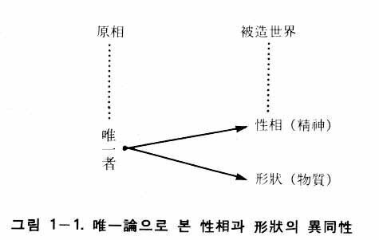
聖書には、被造物を通じて神の性質を知ることができると記録されている（ローマ一・二〇）。被造物を見れば、心と体、本能と肉身、生命と細胞・組織などの両面性があるから、絶対原因者である神の属性にも両面性があると帰納法的に見ることができる。これを「神の二性性相」と呼ぶ。しかしすでに述べたように、神において二性性相は、実は一つに統一されているのである。この事実を『原理講論』では、「神は本性相と本形状の二性性相の中和的主体である」と表現している。このような観点を本体論から見るとき、「統一論」となる。そして神の絶対属性それ自体を表現するとき、「唯一論」となるのである。
アリストテレス（Aristoteles, 384-322 B.C.）によれば、実体は形相（eidos）と質料（hylē）から成っている。形相とは実体をしてまさにそのようにせしめている本質をいい、質料は実体を成している素材をいう。西洋哲学の基本的な概念となったアリストテレスの形相と質料は統一思想の性相と形状に相当する。しかしそこには、次のような点で根本的な差異がある。
アリストテレスによれば、形相と質料を究極にまでさかのぼると純粋形相（第一形相）と第一質料に達する。ここで純粋形相が神であるが、それは質料のない純粋な活動であり、思惟それ自体であるとされる。すなわちアリストテレスにおいて、神は純粋な思惟、または思惟の思惟（ノエシス・ノエセオース）であった。ところで、第一質料は神から完全に独立していた。したがって、アリストテレスの本体論は二元論であった。また第一質料を神から独立したものと見ている点で、その本体論は、神をすべての存在の創造主と見るキリスト教の神観とも異なっていた。
トマス・アクィナス（T. Aquinas, 1225-1274）はアリストテレスに従って、同様に純粋形相または思惟の思惟を神と見た。また彼はアウグスティヌス（A. Augustinus, 354-430）と同様に、神は無から世界を創造したと主張した。神は質料を含む一切の創造主であり、神には質料的要素がないために、「無からの創造」（creatio ex nihilo）を主張せざるをえなかったのである。しかし無から物質が生じるという教義は、宇宙がエネルギーによって造られていると見る現代科学の立場からは受け入れがたい主張である。
デカルト（R.Descartes, 1596-1650）は、神と精神と物体（物質）を三つの実体と見た。究極的には神が唯一なる実体であるが、被造世界における精神と物体は神に依存しながらも相互に完全に独立している実体であるとして二元論を主張した。その結果、精神と物体はいかにして相互作用をするのか、説明が困難になった。デカルトの二元論を受け継いだゲーリンクス（A. Geulincx, 1624-1669）は、互いに独立した異質的な精神と身体の間に、いかにして相互作用が可能なのかという問題を解決するために、神が両者の間を媒介すると説明した。つまり精神や身体の一方において起きる運動を契機として、神が他方において、それに対応する運動を起こすというのであり、これを機会原因論(8)（occasionalism）と呼ぶ。しかしこれは方便的な説明にすぎないのであり、今日では誰も目をくれないものである。すなわち精神と物質を完全に異質的な存在と見たデカルトの観点に問題があったのである。
このように西洋思想がとらえた形相と質料、または精神と物質の概念には、説明の困難な問題があったのである。このような難点を解決したのが統一思想の性相と形状の概念、すなわち「本性相と本形状は同一なる本質的要素の二つの表現態である」という理論である。以上で、神相の「性相と形状」に関する説明を終える。次は、もう一つの神相である「陽性と陰性」に関して説明する。
陽性と陰性も二性性相である
陽性と陰性も神の二性性相である。しかし、同じく二性性相である性相と形状とは次元が違っている。性相と形状は神の直接的な属性であるが、陽性と陰性は神の間接的な属性であり、直接的には性相と形状の属性である。すなわち陽性と陰性は、性相の属性であると同時に形状の属性である。言い換えれば、神の性相も陽性と陰性を属性としてもっており、神の形状も陽性と陰性を属性としてもっているのである。
陽性と陰性の二性性相は、性相と形状の二性性相と同様に中和をなしている。『原理講論』に「神は陽性と陰性の二性性相の中和的主体であられる」とあるのは、このことを意味しているのである。この中和の概念も、性相と形状の中和と同様に、調和、統一を意味し、創造が構想される以前には一なる状態にあったのである。この一なる状態が創造において陽的属性と陰的属性に分化したと見るのである。その意味で東洋哲学の易学において「太極生両儀」（太極から陰陽が生まれた）というのは正しい言葉である。
ところで、陽性と陰性の概念は易学の陽と陰の概念と似ているが、必ずしも一致するのではない。東洋的な概念としては、陽は光、明るさを意味し、陰は蔭、暗さを意味する。この基本的な概念が拡大適用されて、いろいろな意味に使われている。すなわち、陽は太陽、山、天、昼、硬い、熱い、高いなどの意味に、陰は月、谷、地、夜、軟らかい、冷たい、低いなどの意味に使われている。
しかし統一思想から見るとき、陽性と陰性は性相と形状の属性であるために、被造世界において、性相と形状は個体または実体を構成しているが、陽性と陰性は実体の属性として現れているだけである。例えば太陽（個体）は性相と形状の統一体であって、太陽の光の「明るさ」が陽である。同様に月それ自体は性相と形状から成る個体（実体）であって、月の反射光の明るさの「淡さ」が陰なのである。
ここで統一思想の実体の概念について説明する。統一思想の実体は、もちろん統一原理の実体の概念に由来するものである。統一原理には「実体基台」、「実体献祭」、「実体聖殿」、「実体世界」、「実体相」、「実体対象」、「実体路程」など、実体と関連した用語が多く使われているが、そこで実体とは、被造物、個体、肉身をもった人間、物質的存在などの意味をもつ用語である。
ところで、人間を含めたすべての被造物は、性相と形状の合性体（統一体）である。言い換えれば、被造物において性相と形状はそれぞれ個体（実体）の構成部分になっているのである。そして、性相や形状それ自体もまた実体としての性格をもっている。あたかも自動車も製作物（実体）であり、自動車の構成部分である部品（例：タイヤ、トランスミッションなど）も製作物（実体）であるのと同じである。したがって統一思想においては、人間の性相と形状は実体の概念に含まれるのである。
原相において、陽性と陰性をそれぞれ本陽性と本陰性ともいう（『原理講論』四六頁）。原相の「本性相と本形状」および「本陽性と本陰性」に似ているのが人間の「性相と形状」と「陽性と陰性」である。すでに述べたように、被造世界では性相と形状は共に実体の性格をもっており、陽性と陰性は実体としての性相と形状（またはその合性体である個体）の属性となっている。そのことを原相において示したのが図１―２である。
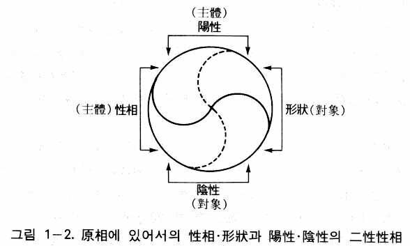
原相における性相と形状および陽性と陰性の関係を正確に知るためには、人間における実体としての性相と形状、そしてその属性としての陽性と陰性の関係を調べてみればよい。人間の場合の性相と形状および陽性と陰性の関係をまとめると、表１―3のようになる。
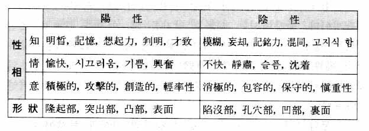
そこに示されるように、性相（心）の知情意の機能にもそれぞれ属性として陽性と陰性がある。例えば知的機能には明晰、判明などの陽的な面と、模糊、混同などの陰的な面があり、情的機能には愉快、喜びなどの陽的な面と不快、悲しみなどの陰的な面がある。意的機能にも積極的、創造的などの陽的な面と、消極的、保守的などの陰的な面がある。そして形状（肉身）においても陽的な面（隆起部、突出部）と陰的な面（陥没部、孔穴部）があるのは言うまでもない。
ここで明らかにしておきたいのは、ここに示したのは人間の場合にのみいえることであるということである。神は心情を中心とした原因的存在であって、創造前の神の性相と形状の属性である陽性と陰性は、ただ調和的な変化を起こす可能性としてのみ存在しているだけである。そして創造が始まれば、その可能性としての陽性と陰性が表面化されて、知情意の機能に調和のある変化を起こし、形状にも調和的な変化をもたらすのである。
陽性・陰性と男子・女子との関係
ここで問題となるのは、陽性・陰性と男子・女子との関係である。東洋では古来から、男子を陽、女子を陰と表現する場合が多かった。しかし統一思想では男子を「陽性実体」、女子を「陰性実体」という。表面的に見ると東洋の男女観と統一思想の男女観は同じように見えるが、実際は同じではない。
統一思想から見るとき、男子は陽性を帯びた「性相と形状の統一体」であり、女子は陰性を帯びた「性相と形状の統一体」である。したがって男子を「陽性実体」、女子を「陰性実体」と表現するのである（『原理講論』四八頁）。
ここで特に指摘することは、男子を「陽性実体」というときの陽性と、女子を「陰性実体」というときの陰性が、表１―１で示される陽性と陰性とは必ずしも一致しないということである。すなわち、性相においても形状においても、表１―１で示される陽性と陰性の特性は男女間で異なっているのである。そのことを具体的に説明すれば、次のようになる。
まず、形状における陽性と陰性の男女間での差異を説明する。形状すなわち体において、男女は共に、陽性である隆起部、突出部や、陰性である陥没部、孔穴部をもっているが、男女間でそれらに差異があるのである。男子は突出部（陽性）がもう一つあり、女子は孔穴部（陰性）がもう一つある。また身長においても、臀部の大きさにおいても、男女間で差異がある。したがって形状における陽性と陰性の男女間での差異は量的差異である。すなわち、男子は陽性が量的により多く、女子は陰性が量的により多いのである。
それでは性相においてはどうであろうか。性相における陽性と陰性の男女間での差異は、量的差異ではなく質的差異である（量的にはむしろ男女間で差異はない）。例えば性相の知において、男女は共に明晰さ（陽）をもっているが、その明晰さの質が男女間で異なるのである。男子の明晰さは包括的な場合が多く、女子の明晰さは縮小指向的な場合が多い。才致においても同様である。また性相の情の悲しみ（陰）において、過度な場合、男子の悲しみは悲痛に変わりやすく、女子の悲しみは悲哀に変わりやすい。性相の意における積極性（陽）の場合、男子の積極性は相手に硬い感触を与えやすいが、女子の積極性は相手に軟らかい感触を与えやすい。男女間のこのような差異が質的差異である。これをまとめると表１―4のようになる。
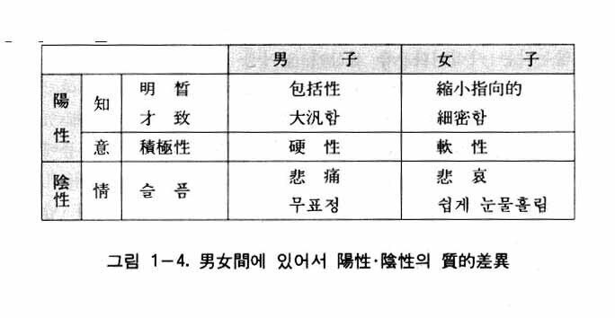
このように性相において、陽性にも陰性にも男女間で質的差異があるのである。これを声楽に例えると、高音には男子（テノール）と女子（ソプラノ）の差異があり、低音にも男子（バス）と女子（アルト）の差異があるのと同じである。
このように性相における陽性と陰性は、男女間において量的または質的差異を表すのであるが、男子の陽性と陰性をまとめて男性的、女子の陽性と陰性をまとめて女性的であると表現する。したがってここに、「男性的な陽陰」と「女性的な陽陰」という概念が成立するのである。
ここにおいて、次のような疑問が生ずるかもしれない。すなわち形状においては男女間の差異が量的差異であるから、男子を陽性実体、女子を陰性実体と見るのは理解できるが、性相においては、男女の差異が質的差異だけで、量的には男女は全く同じ陽陰をもっているのに、なぜ男子を陽性実体、女子を陰性実体というのか、という疑問である。
それは男女間の陽陰の差異が量的であれ質的であれ、その差異の関係は主体と対象の関係であるということから解決される。後述するように、主体と対象の関係は積極性と消極性、能動性と被動性、外向性と内向性の関係である。ここに性相（知情意）の陽陰の男女間の質的差異においても、男性の陽と女性の陽の関係、および男性の陰と女性の陰の関係は、すべて主体と対象の関係になっているのである。
すなわち、知的機能の陽において、男性の明晰の包括性と女性の明晰の縮小指向性が主体と対象の関係であり、情的機能の陰において、男性の悲痛と女性の悲哀の関係も主体と対象の関係である。また意的機能の陽において、男性の積極的の硬性と女性の積極性の軟性の関係も主体と対象の関係なのである。これは男女間の陽陰の質的差異は量的差異の場合と同様なのであって、男性と女性の関係が陽と陰の関係であることを意味するのである。以上で男を陽性実体、女を陰性実体と呼ぶ理由を明らかにした。
性相・形状の属性としての陽性・陰性と現実問題の解決
以上で陽性・陰性は性相・形状の属性であることが明らかにされたと思う。ところで、このことがなぜ重要かといえば、それがまた現実問題解決の基準となるためである。ここで現実問題とは、男女間の問題、すなわち性道徳の退廃、夫婦間の不和、家庭破壊などの問題をいう。
陽性・陰性が性相・形状の属性であるということは、性相・形状と陽性・陰性の関係が実体と属性との関係であることを意味する。実体と属性において先次的に重要なのは実体である。属性がよりどころとする根拠が実体であるからである。実体がなくては属性は無意味である。そのように性相・形状は陽性・陰性が「よりどころとする根拠」としての実体であり、性相・形状がなくては陽性・陰性は無意味なものになってしまうのである。
人間において、性相・形状の問題とは、現実的には性相・形状の統一をいうのであって、それは心と体の統一、生心と肉心の統一、すなわち人格の完成を意味する。そして人間において、陽性と陰性の問題は現実的には男子と女子の結合を意味するのである。ここで「人格の完成」と「男女間の結合」の関係が問題となるが、「陽性・陰性が性相・形状の属性である」という命題に従うならば、男女は結婚する前にまず人格を完成しなければならないという論理が成立するのである。
統一原理の三大祝福（個性完成、家庭完成、主管性完成）において、個性完成（人格完成）が家庭完成（夫婦の結合）より前に置かれた根拠は、まさにこの「陽性・陰性は性相・形状の属性である」という命題にあったのである。『大学』の八条目の中の「修身、斉家、治国、平天下」において、修身を斉家より前に置いたのも、『大学』の著者が無意識のうちにこの命題を感知したためであると見なければならない。
今日、男女関係に関連した各種の社会問題（性道徳の退廃、家庭の不和、離婚、家庭破壊など）が続出しているが、これらはすべて家庭完成の前に個性完成が成されなかったこと、すなわち斉家の前に修身が成されなかったことに由来しているのである。
言い換えれば、今日、最も難しい現実問題の一つである男女問題は、男女共に家庭完成の前に（結婚前に）人格を完成することによって、つまり斉家する前に修身することによって、初めて解決することができるのである。このように「陽性・陰性が性相・形状の属性である」という命題は、現実問題の解決のまた一つの基準となっているのである。
個別相とは何か
上述した性相・形状および陽性・陰性は神の二性性相であって、この二種の相対的属性は、あまねく被造世界に展開されて、普遍的にすべての個体の中に現れている。聖書に「神の見ない性質、すなわち、神の永遠の力と神性〔および神相〕とは、天地創造このかた被造物において知られていて、明らかに認められるからである」（ローマ一・二〇）と記録されているのは、この事実を言っているのである。このように、万物はみな普遍的に性相・形状および陽性・陰性をもっている。したがって神の性相・形状および陽性・陰性を「普遍相」という。
一方で、万物は独特な性質をもっている。鉱物、植物、動物にいろいろな種類があるのもそのためである。天体も、恒星であれ惑星であれ、みな特性をもっている。特に人間の場合、個人ごとに独特の性質をもっている。すなわち、体格、体質、容貌、性格、気質など、個人ごとに異なっているのである。
万物と人間のこのような個別的な特性の原因の所在は、神の本性相の内部の内的形状にある。このような個別的な特性の原因を「個別相」という。言い換えれば、神の属性の中にある個別相が被造物の個体または種類ごとに現れたものを被造物の個別相という。そして人間においては個人ごとに特性が異なるために、人間の個別相を「個人別個別相」といい、万物においては種類によって特性が異なるために、万物の個別相を「種類別個別相」という。すなわち人間においては個別相は個人ごとの特性をいうが、万物（動物、植物、鉱物）の個別相は、一定の種類の特性すなわち種差（特に最下位の種差）をいう。それは、人間は神の喜びの対象および神の子女として造られているのに対して、万物は人間の喜びの対象として造られているからである。
個別相と普遍相
ここで被造物の普遍相と個別相との関係を明らかにする。個別相は個体の特性であるとしても、普遍相と別個の特性ではなくて、普遍相それ自体が個別化されたものである。例えば人間の顔（容貌）がそれぞれ違うのは、顔という形状（普遍相）が個別化され特殊化されたものであり、人間の個性がそれぞれ異なるのは、性格、気質という性相（普遍相）が個別化され、特殊化されたものである。そのように人間において個別相とは、個人ごとに普遍相が個別化されたものであり、その他の被造物においては、種類ごとに普遍相が個別化されたものである。
被造物において、このように普遍相の個別化が個別相であるのは、神の内的形状の中にある被造物に対する個別化の要因すなわち個別相が、神の性相・形状および陽性・陰性を個別化させる要因として作用しているからである。ここで神の普遍相を「原普遍相」といい、神の内的形状の中にある個別相を「原個別相」とも呼ぶ。したがって被造物の普遍相と個別相は、原普遍相と原個別相にそれぞれ対応しているのである。
個別相と突然変異
次に個別相と遺伝子の関係について述べる。進化論から見るとき、一般的に生物の種差としての個別相の出現は、突然変異による新形質の出現と見ることができる。そして人間の個性としての個別相の出現は、父のＤＮＡと母のＤＮＡの多様な混合または組み合せによる遺伝として見ることができる。
しかし統一思想では、進化論は創造過程の現象論的な把握にすぎないと見るために、生物における突然変異による新形質の出現は、実は突然変異の方式を取った新しい個別相の創造なのであり、人間における父母のＤＮＡの混合による新形質の出現も、実はＤＮＡの遺伝情報の混合の方式を通じた人間の新個別相の創造と見るのである。より正確にいえば、生物や人間の新しい個別相の創造とは、神の内的形状にある一定の原個別相を、これに対応する被造物に新個別相として付与することである、と見るのである。
個別相と環境
個別相をもった個体が成長するためには、環境との間に不断の授受関係を結ばざるをえない。すなわち個別相をもった個体は、環境との授受作用によって変化しながら成長し、発展する。これは授受作用の結果によって必ず合性体または新生体（変化体）が形成されるという授受法の原則によるのである。
したがって個体の特性（個別相）は原則的に先天的なものであるが、その個別相の一部が環境要因によって変化するので、あたかもその特性が後天的に形成されたかのように感じられる場合がある。同一の環境要因によって現れる特性にも、個人ごとに差異があるのが見られるが、これは環境に適応する方式（授受作用の方式）にも個人差があるからである。その個人差も個別相に基因する個人差である。このように、個別相の一部が変形されて後天的に形成された特性のように現れたものを「個別変相」という。
人間個性の尊貴性
およそ被造物の特徴は、神の属性の個別相に由来するものであって、みな尊いものであるが、特に人間の個性はいっそう尊厳なものであり、神聖であり、貴重なものである。人間は万物に対する主管主であると同時に、霊人体と肉身から成る二重体であって、肉身の死後にも霊人体が永生するからである。すなわち人間は地上においても天上においても、その個性を通じて愛を実践しながら創造理想を実現するようになっているために、人間の本然の個性はそれほど尊貴なものであり、神性なものである。人道主義も人間の個性の尊貴性を主張しているが、個人の特性の神来性が認められない限り、そのような主張によっては、人間を動物視する唯物論的人間観を克服するのは難しい。そのような意味で個別相に関する理論も、なぜ人間の個性が尊重されなければならないかという、また一つの現実問題の解決の基準になるのである。
以上で神相に関する説明を終わり、次は神性について説明する。
神の属性には、先に述べたように形の側面もあるが、機能、性質、能力の側面もある。それが神性である。従来のキリスト教やイスラム教でいう全知、全能、遍在性、至善、至真、至美、公義、愛、創造主、審判主、ロゴスなどは、そのまま神性に関する概念であり、統一思想ももちろん、そのような概念を神性の表現として認めている。
しかし現実問題の解決という観点から見るとき、そのような概念は形（神相）の側面を扱っていないという点だけでなく、大部分が創造と直接関連した内容を含んでいないという点で、そのままでは現実問題の解決に大きな助けとはならない。統一思想は現実問題の解決に直接関連する神性として、心情、ロゴス、創造性の三つを挙げている。その中でも心情が最も重要であり、それは今までいかなる宗教も扱わなかった神性である。次に、これらの神性の概念を説明し、それがいかに現実問題を解決しうるかを明らかにする。
心情とは何か
心情は神の性相の最も核心となる部分であって、「愛を通じて喜ぼうとする情的な衝動」である。心情のそのような概念を正しく理解する助けとなるように、人間の場合を例として説明する。
人間は誰でも生まれながらにして喜びを追求する。喜ぼうとしない人は一人もいないであろう。人間は誰でも幸福を求めているが、それがまさにその証拠である。そのように人間はいつも、喜びを得ようとする衝動、喜びたいという衝動をもって生きている。それにもかかわらず、今日まで大部分の人々が真の喜び、永遠の喜びを得ることができないでいることもまた事実である。
それは人間がたいてい、金銭や権力、地位や学識の中に喜びを探そうとするからである。それでは真の喜び、永遠な喜びはいかにして得られるであろうか、それは愛（真の愛）の生活を通じてのみ得られるのである。愛の生活とは、他人のために生きる愛他的な奉仕生活、すなわち他人に温情を施して喜ばせようとする生活をいう。
心情は情的衝動である
ここで「情的な衝動」について説明する。情的な衝動とは内部からわきあがる抑えがたい願望または欲望を意味する。普通の願望や欲望は意志で抑えることができるが、情的な衝動は人間の意志では抑えられないのである。
われわれは喜ぼうとする衝動（欲望）が抑えがたいということを、日常の体験を通じてよく知っている。人間が金をもうけよう、地位を得よう、学識を広めよう、権力を得ようとするのも喜ぼうとする衝動のためであり、子供たちが何事にも好奇心をもって熱心に学ぼうとするのも喜ぼうとする衝動のためであり、甚だしくは犯罪行為までも、方向が間違っているだけで、その動機はやはり喜ぼうとする衝動にあるのである。
そのように喜ぼうとする衝動（欲望）は抑えがたいものである。欲望は達成されてこそ満たされる。しかるに大部分の人間にとって、喜ぼうとする欲望が満たされないでいるのは、喜びは愛を通じてしか得られないということが分かっていないからである。そして喜びが愛を通じてしか得られないのは、その喜びの根拠が神にあるからである。
神は心情である
神は心情すなわち愛を通じて喜ぼうとする情的な衝動をもっているが、そのような神の衝動は人間の衝動とは比較にもならないほど抑えがたいものであった。人間は相似の法則に従って、そのような神の心情を受け継いだので、たとえ堕落して愛を喪失したとしても、喜ぼうとする衝動はそのまま残っている。ゆえに、情的な衝動を抑えることは難しいのである。
ところで神において、喜ぼうとする情的な衝動は、愛そうとする衝動によって支えられている。真の喜びは真の愛を通じなければ得られないからである。したがって、愛そうとする衝動は喜ぼうとする衝動よりも強いのである。愛の衝動は愛さずにはいられない欲望を意味する。そして愛さずにはいられないということは、愛の対象をもたずにはいられないことを意味する。
そのような愛の衝動によって喜ぼうとする衝動が触発される。したがって愛の衝動が一次的なものであり、喜びの衝動は二次的なものである。ゆえに愛は決して喜びのための手段ではなく、ただ無条件的な衝動なのである。そして愛の必然的な結果が喜びである。したがって愛と喜びは表裏の関係にあり、喜ぼうとする衝動も実は愛そうとする衝動が表面化したものにすぎない。
ゆえに神の心情は、「限りなく愛そうとする情的な衝動」であるとも表現することができる。愛には必ず対象が必要である。特に神の愛は抑えられない衝動であるから、その愛の対象が絶対的に必要であった。したがって創造は必然的、不可避的であり、決して偶発的なものではなかった。
宇宙創造と心情
そのように心情が動機となり、神は愛の対象として人間と万物を創造されたのである。人間は神の直接的な愛の対象として、万物は神の間接的な愛の対象として創造された。万物が神の間接的な対象であるということは、直接的には万物は人間の愛の対象であることを意味する。そして創造の動機から見るとき、人間と万物は神の愛の対象であるが、結果から見るとき、人間と万物は神の喜びの対象なのである。
このように心情を動機とする宇宙創造の理論（心情動機説）は創造説が正しいか生成説が正しいかという一つの現実問題を解決することになる。すなわち、宇宙の発生に関する従来の創造説と生成説の論争に終止符を打つ結果になるのである。そして生成説（プロティノスの流出説、ヘーゲルの絶対精神の自己展開説、ガモフのビッグバン説、儒教の天生万物説など）では、現実の罪悪や混乱などの否定的側面までも自然発生によるものとされて、その解決の道がふさがれているが、正しい創造説では、そのような否定的側面を根本的に除去することができるのである。
心情と文化
次に、「心情は神の性相の核心である」という命題から心情と文化の関係について説明する。神の性相は内的性相と内的形状から成っているが、内的性相は内的形状より内的である。そして心情は内的性相よりさらに内的である。このような関係は、創造本然の人間の性相においても同じである。それを図で表せば、図１―5のようになる。
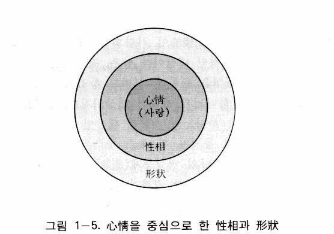
これは心情が人間の知的活動、情的活動、意的活動の原動力となることを意味する。すなわち心情は情的な衝動力であり、その衝動力が知的機能、情的機能、意的機能を絶えず刺激することによって現れる活動がまさに知的活動、情的活動、意的活動なのである。
人間の知的活動によって、哲学、科学をはじめとする様々な学問分野が発達するようになり、情的活動によって、絵画、音楽、彫刻、建築などの芸術分野が発達するようになり、意的活動によって、宗教、倫理、道徳、教育などの規範分野が発達するようになる。
創造本然の人間によって構成される社会においては、知情意の活動の原動力が心情であり愛であるゆえに、学問も芸術も規範も、すべて心情が動機となり、愛の実現がその目標となる9。ところで学問分野、芸術分野、規範分野の総和、すなわち人間の知情意の活動の成果の総和が文化である。したがって創造本然の文化は心情を動機とし、愛の実現を目標として成立するのであり、そのような文化は永遠に続くようになる。そのような文化を統一思想では心情文化、愛の文化、または中和文化と呼ぶ。
しかしながら人間始祖の堕落によって、人類の文化は様々な否定的な側面をもつ非原理的な文化となり、興亡を繰り返しながら今日に至った。これは人間の性相の核心である心情が利己心によって遮られ、心情の衝動力が利己心のための衝動力になってしまったからである。
そのように混乱を重ねる今日の文化を正す道は、利己心を追放し、性相の核心の位置に心情の衝動力を再び活性化させることによって、すべての文化の領域を心情を動機として、愛の実現を目標とするように転換させることである。すなわち心情文化、愛の文化を創建することである。このことは「心情は神の性相の核心である」という命題が、今日の危機から文化をいかに救うかというまた一つの現実問題解決の基準になることを意味するのである。
心情と原力
最後に心情と原力について説明する。宇宙万物はいったん創造されたのちにも、絶えず神から一定の力を受けている。被造物はこの力を受けて個体間においても力を授受している。前者は縦的な力であり、後者は横的な力である。統一思想では前者を原力といい、後者を万有原力という(10)。
ところでこの原力も、実は原相内の授受作用、すなわち性相と形状の授受作用によって形成された新生体である。具体的にいえば、性相内の心情の衝動力と形状内の前エネルギー（Pre-Energy）との授受作用によって形成された新しい力が原力（Prime Force）である。その力が、万物に作用して、横的な万有原力（Universal Prime Force）として現れて、万物相互間の授受作用を起こすのである。したがって万有原力は神の原力の延長なのである(11)。
万有原力が心情の衝動力と前エネルギーによって形成された原力の延長であるということは、宇宙内の万物相互間には、物理学的な力のみならず愛の力も作用していることを意味する(12)。したがって人間が互いに愛し合うのは、そうしても、しなくても良いというような、恣意的なものではなく、人間ならば誰でも従わなくてはならない天道なのである。
このように「心情と原力の関係」に関する理論も、また一つの現実問題の解決の基準となることが分かる。すなわち「人間は必ず他人を愛する必要があるのか」、「時によっては闘争（暴力）が必要な時もあるのではないか」、「敵を愛すべきか、打ち倒すべきか」というような現実問題に対する解答がこの理論の中にあることが分かる。
ロゴスとは何か
ロゴスとは、統一原理によれば言または理法を意味する（『原理講論』二六五頁）。ヨハネによる福音書には、神の言によって万物が創造されたことが次のように表現されている。「初めに言があった。言は神と共にあった。言は神であった。この言は初めに神と共にあった。すべてのものは、これによってできた。できたもののうち、一つとしてこれによらないものはなかった」（ヨハネ一・一―三）。
統一思想から見れば、ロゴスを言というとき、それは神の思考、構想、計画を意味し、ロゴスを理法というとき、それは理性と法則を意味する。ここで理性とは、本性相内の内的性相の知的機能に属する理性を意味するのであるが、万物を創造したロゴスの一部である理性は、人間の理性とは次元が異なっている。人間の理性は自由性をもった知的能力であると同時に、概念化の能力または普遍的な真理追求の能力であるが、ロゴス内の理性は、ただ自由性をもった思考力であり、知的能力なのである。
そしてロゴスのもう一つの側面である法則は、自由性や目的性が排除された純粋な機械性、必然性だけをもつものである。法則は、時と場所を超越して、いつどこでも、たがわずに作用する規則的なものである。すなわち、機械装置である時計の時針や分針が、いつどこでも一定の時を刻むのと同様なものが法則の規則性、機械性なのである。
ロゴスとは理法である
理法とは、このような理性と法則の統一を意味する。ここでは主として、そのような理法としてのロゴスを扱う。それはそうすることによって、また一つの現実問題の解決の基準を立てるためである。現実問題とは、今日、社会の大混乱の原因となっている価値観の崩壊をいかに収拾するかという問題である。
『原理講論』には、ロゴスは神の対象であると同時に二性性相（ロゴスの二性性相）をもっているとされている（二六五頁）。これはロゴスが神の二性性相に似た一種の被造物であり新生体であることを意味するのであって、ロゴスは「性相と形状の合性体」と同様なものであると理解することができる。
しかし、ロゴスは神の言、構想であって、それによって万物が創造されたのであるから、ロゴスそれ自体が万物と全く同じ被造物ではありえない。神の二性性相に似た神の対象であるロゴスは思考の結果物である。すなわち、それは「完成された構想」を意味するものであり、神の心に描かれた一種の設計図である。われわれが建物を造るとき、まずその建物に対する詳細な設計図を作成するように、神が万物を創造されるときにも、まず万物一つ一つの創造に関する具体的な青写真または計画が作られるようになる。それがまさにロゴスなのである。
ところで設計図は建築物ではないとしても、それ自体は製作物すなわち結果物であることに違いない。同じように、ロゴスも構想であり設計図である以上、やはり結果物であり、新生体であり、一種の被造物なのである。被造物はすべて神の二性性相に似ている。それでは新生体としてのロゴスは、神のいかなる二性性相に似たのであろうか。それがまさに本性相内の内的性相と内的形状である(13)。
言い換えれば、内的性相と内的形状が一定の目的を中心として統一されている状態がまさにロゴスの二性性相なのである。あたかも神において、本性相と本形状が中和（統一）をなす状態が神相であるのと同様である。ところでロゴスは言であると同時に理法でもある。それでは、ロゴスを理法として理解するとき、ロゴスの二性性相とは具体的にいかなるものであろうか。それはまさに理性と法則である。理性と法則の関係は内的性相と内的形状の関係と同じであって、内的性相と内的形状の関係は後述するように主体と対象の関係であるから、理性と法則の関係は主体と対象の関係になっている。
ロゴスは理性と法則の統一体
理性と法則の統一としてのロゴスによって万物が創造されたために、すべての被造物には理性的要素と法則的要素が統一的に含まれている。したがって万物が存在し、運動するとき、必ずこの両者が統一的に作用する。ただし低次元の万物であればあるほど、法則的要素がより多く作用し、高次元であればあるほど、理性的要素がより多く作用する。
最も低次元である鉱物においては、法則的要素だけで理性的要素は全くないようであり、最も高次元である人間においては、理性的要素だけで法則的要素は全くないようであるが、実際は両者共に理性的要素および法則的要素が統一的に作用しているのである。
したがって万物の存在と運動は、自由性と必然性の統一であり、目的性と機械性の統一である。すなわち必然性の中に自由性が作用し、機械性の中に目的性が作用するのである。ところで今まで、自由と必然の関係は二律背反の関係にあるように理解されてきた。それはあたかも解放と拘束が正反対の概念であるように、自由と必然も正反対の概念であるように感じられたからである。
しかし統一思想は、ロゴスの概念に関して、理性と法則を二律背反の関係とは見ないで、むしろ統一の関係と見るのである。比喩的に言えば、それは列車がレールの上を走ることと同じである。列車がレールの上を走るということは必ず守らなければならない規則（法則）であって、万一、レールから外れると、列車自体が破壊されるだけでなく、近隣の人々や建物に被害を与えるのである。ゆえに列車は必ずレールの上を走らなくてはならないのである。そのような観点から見て、列車の運行は順法的であり、必然的である。しかしいくらレールの上を走るといっても、速く走るか、ゆっくり走るかは機関車（機関士）の自由である。したがって列車の運行は全く必然的なもののように思われるが、実際は自由性と必然性の統一なのである。
もう一つの例を挙げて説明しよう。自動車の運転手は青信号の時には前進し、赤信号の時には停止するが、これは交通規則として誰もが守らなければならない必然性である。しかし、いったん青信号になったのちには、交通安全に支障にならない限り、速度は自由に調整することができる。したがって自動車の運転も自由性と必然性の統一なのである(14)。
以上、列車の運行や自動車の運転において、自由性と必然性が統一の関係にあることを明らかにしたが、ロゴスにおける理性（自由性）と法則（必然性）も同様に統一の関係にあるのである。そのように、ロゴスの二性性相としての理性と法則は二律背反でなくて統一であることを知ることができる。
ロゴスが理性と法則の統一であるために、ロゴスを通じて創造された万物は、大きくは天体から小さくは原子に至るまで、すべて例外なく、理性と法則の統一的存在である。すなわち万物は、すべて理性と法則、自由性と必然性、目的性と機械性の統一によって存在し、運動し、発展しているのである。
この事実は今日の一部の科学者の見解とも一致している。例えば検流計（ポリグラフ）の付着実験による植物心理の確認（バクスター効果(15)）や、ジャン・シャロン（Jean Charon, 1920- ）の複素相対論における電子や光子内の記憶と思考のメカニズムの確認(16)、などがそうである。すなわち、植物にも心があり、電子にも思考のメカニズムがあるということは、すべての被造物の中に理性と法則、自由性と必然性が作用していることを示しているのである。
ロゴスそして自由と放縦
次は、ロゴスと関連して自由と放縦の真の意味を明らかにする。自由と放縦に関する正しい認識によって、また一つの現実問題が解決されるからである。今日、自由の名のもとになされている様々な秩序破壊行為と、これに伴う社会混乱に対する効果的な対策は何かということが問題になっているが、この問題を解くためには、まず自由と放縦の真の意味が明らかにされなければならない。
『原理講論』には「原理を離れた自由はない」（一二五頁）、「責任のない自由はあり得ない」（一二五頁）、「実績のない自由はない」（一二六頁）と書かれている。これを言い換えれば、自由の条件は「原理内にあること」、「責任を負うこと」、「実績をあげること」の三つになる。ここで「原理を離れる」というのは、「原則すなわち法則を離れる」という意味であり、「責任を負う」とは、自身の責任分担の完遂を意味すると同時に、創造目的の完成を意味するのであり、「実績をあげる」とは、創造目的を完成し、善の結果をもたらすことを意味するのである（一二六頁）。ところで責任分担の完遂や、創造目的の完成や、善の結果をもたらすことは、すべて広い意味の原理的な行為であり、天道に従うことであり、法則（規範）に従うことなのである。
したがって自由に関する三つの要件、すなわち「原理内にあること」、「責任を負うこと」、「実績をあげること」は、一言で「自由とは原理内での自由である」と表現することができるのであり、結局、真の自由は法則性、必然性との統一においてのみ成立するという結論になる。ここで法則とは、自然においては自然法則であり、人間生活においては価値法則（規範）である。価値とか規範は秩序のもとにおいてのみ成立する。それゆえ規範を無視するとか、秩序を破壊する行為は、本然の世界では決して自由ではないのである。
自由とは、厳密な意味では選択の自由であるが、その選択は理性によってなされる。したがって、自由は理性から出発して実践に移るのである。そのとき、自由を実践しようとする心が生まれるが、それが自由意志であり、その意志によって自由が実践されれば、その実践行為が自由行動になる。これが『原理講論』（一二五頁）にある自由意志、自由行動の概念の内容である。
かくして理性の自由による選択や、自由意志や、自由行動はみな恣意的なものであってはならず、必ず原理内で、すなわち法則（価値法則）の枠の中で、必然性との統一のもとでなされなければならない。そのように自由は理性の自由であり、理性は法則との統一のもとでのみ作用するようになっている。したがって本然の自由は理法すなわちロゴスの中でのみ成立することができ、ロゴスを離れては存立することはできない。よく法則は自由を拘束するもののように考えられているが、それは法則と自由の原理的な意味を知らないことからくる錯覚なのである。
ところで、本然の法則や自由はみな愛の実現のためのものである。すなわち愛の中での法則であり自由である。真の愛は生命と喜びの源泉である。したがって本然の世界では、喜びの中で、法則に従いながら自由に行動するのである。それは、ロゴスが心情を土台として形成されるからである。
ロゴスを離れた恣意的な思考や恣意的な行動は似非自由であり、それはまさに放縦である。自由と放縦はその意味が全く異なる。自由は善の結果をもたらす建設的な概念であるが、放縦は悪の結果をもたらす破壊的な概念である。そのように自由と放縦は厳密に区別されるものであるが、よく混同されたり、錯覚されている。それは自由の真の根拠であるロゴスに関する理解がないからである。ロゴスの意味を正しく理解すれば、自由の真の意味を知るようになり、したがって自由の名のもとでのあらゆる放縦が避けられ、ついには社会混乱の収拾も可能になるであろう。このようにロゴスに関する理論も、現実問題解決のまた一つの基準になるのである。
ロゴスおよび心情と愛
終わりに、ロゴスと心情と愛の関係について述べる。すでに明らかにしたように、ロゴスは言または構想であると同時に理法である。ところで言（構想）と理法は別のものではない。言の中にその一部として理法が含まれているのである。あたかも生物を扱う生物学の中にその一分科として生理学が包まれているのと同じである。すなわち生物学は解剖学、生化学、生態学、発生学、分析学、生理学など、いろいろな分科に分類されるが、その中の一分科が生理学であるように、創造に関する神の無限なる量と種類を内容とする言の中の小さな一部分が理法なのであり、それは言の中の万物の相互作用または相互関係の基準に関する部分なのである。
言と理法は別個のものではないばかりでなく、言の土台となっている心情は、同時に理法の土台になっている。あたかも有機体の現象の研究が生物学のすべての分科に共通であるように、創造における神の心情が構想と理法の共通基盤となっているのである。
心情は愛を通じて喜ぼうとする情的な衝動である。心情が創造において言と理法の土台となっているということは、被造物全体の構造、存在、変化、運動、発展など、すべての現象が、愛の衝動によって支えられていることを意味する。したがって自然法則であれ、価値法則であれ、必ずその背後に愛が作用しており、また作用しなければならない。一般的に自然法則は物理化学的な法則だけであると理解されているが、それは不完全な理解であって、必ずそこには、たとえそれぞれ次元は異なるとしても、愛が作用しているのである。人間相互間の価値法則（規範）には、愛がより顕著に作用しなければならないのは言うまでもない。
先にロゴスの解説において、主として理性と法則、したがって自由性と必然性に関して扱ったが、理法の作用においては、理法それ自体に劣らず愛が重要であり、愛は重要度において理法を凌駕することさえあるのである。
愛のない理法だけの生活は、規律の中だけで生きる兵営のように、冷えやすく、中身のない粃のようにしおれやすいのである。温かい愛の中で守られる理法の生活においてのみ、初めて百花が咲き乱れ、蜂や蝶が群舞する春の園の平和が訪れてくるのである。このことは家庭に真の平和をもたらす真の方案は何かという、また一つの現実問題解決の基準になるのである。すなわち心情を土台とするロゴスの理論は、家庭に対する真の平和樹立の方案にもなるのである。
創造性とは何か
創造性は一般的に「新しいものを作る性質」と定義されている。統一原理において、創造性を一般的な意味にも解釈しているが、それよりは「創造の能力」として理解している。それは『原理講論』において「神の創造の能力」と「神の創造性」を同じ意味で使っているのを見ても知ることができる（七九頁）。
ところで、神の創造性をそのように創造の性質とか創造の能力として理解するだけでは正確な理解となりえない。すでに明らかにしたように、神の属性を理解する目的は現実問題を根本的に解決することにある。したがって、神に関するすべての理解は正確で具体的でなくてはならない。創造性に関しても同じである。したがって創造に関する常識的な理解だけでは神の創造性を正確に把握するのは困難である。ここに神の創造の特性、または要件が明らかにされる必要があるのである。
神の創造は偶発的なものではなく、自然発生的なものではさらにない。それは抑えることのできない必然的な動機によってなされたのであり、明白な合目的的な意図によってなされたのであった。そのような創造がいわゆる「心情を動機とした創造」（心情動機説）である。
創造には、創造目的を中心とした内的および外的な四位基台または授受作用が必ず形成されなければならない。したがって、神の創造性は具体的には「目的を中心とした内的および外的な四位基台形成の能力」と定義される。これを人間の、新しい製品をつくるという創造に例えて説明すれば、内的四位基台形成は、構想すること、新しいアイデアを開発すること、したがって青写真の作成を意味し、外的四位基台形成は、その青写真に従って人間（主体）が機械と原料（対象）を適切に用いて新製品（新生体）を造ることを意味するのである。
神において、内的四位基台の形成は、目的を中心とするロゴスの形成であり、外的四位基台形成は、目的を中心として性相と形状が授受作用をして万物を造ることである。したがって神の創造性はそのような内的および外的四位基台形成の能力であり、言い換えれば「ロゴスの形成に続いて万物を形成する能力」である。神の創造性の概念をこのように詳細に扱うのは、創造に関連したいろいろな現実的な問題（例えば公害問題、軍備制限ないし撤廃問題、科学と芸術の方向性の問題など）の根本的解決の基準を定立するためである。
人間の創造性
次は、人間の創造性に関して説明する。人間にも新しい物を作る能力すなわち創造性がある。これは相似の法則に従って、神の創造性が人間に与えられたものである。ところで人間は元来、相似の法則によって造られたので、人間の創造性は神の創造性に完全に似るように、すなわち神の創造性を引き継ぐようになっていた（『原理講論』七九、一一四、二五九頁）。しかし、堕落によって人間の創造性は神の創造性に不完全に似るようになったのである。
人間の創造性が神の創造性に似るということは、神が創造性を人間に賦与することを意味する（同上、一三一、二五九頁）。それでは、神はなぜ人間に創造性を賦与しようとされたのであろうか。それは人間を「万物世界に対する主管位に立たせて」（同上、一三二頁）、「万物を主管し得る資格を得させるため」（同上、一一四、一三一頁）であった。ここで万物主管とは、万物を貴く思いながら、万物を願うように扱うことをいう。つまり人間が愛の心をもって、いろいろな事物を扱うことを万物主管というが、そこには人間生活のほとんどすべての領域が含まれる。例えば経済、産業、科学、芸術などがすべて万物主管の概念に含まれる。地上の人間は肉身をもって生きるために、ほとんどすべての生活領域において物質を扱っている。したがって人間生活全体が万物主管の生活であるといっても過言ではないのである。
ところで本然の万物主管は、神の創造性を受け継がなくては不可能である。本然の主管とは、愛をもって創意的に事物を扱いながら行う行為、例えば耕作、製作、生産、改造、建設、発明、保管、運送、貯蔵、芸術創作などの行為をいう。そのような経済、産業、科学、芸術などの活動だけでなく、ひいては宗教生活、政治生活までも、それが愛をもって物を扱う限りにおいて、本然の万物主管に含まれる。そのように本然の人間においては、事物を扱うのに、愛とともに新しい創案（構想）が絶えず要求されるために、本然の主管のためには神の創造性が必要になるのである。
人間は堕落しなかったならば、そのような神の創造性に完全に似ることができ、したがって本然の万物主管が可能となったことであろう。ところが人間始祖の堕落によって、人間は本然の姿を失ってしまった。したがって、人間が引き継いだ創造性は不完全なものになり、万物主管も不完全な非原理的なものになってしまった。
ここに次のような疑問が生ずるかもしれない。すなわち「神が相似の法則によって人間を創造したとすれば、人間は生まれる時から本然の創造性をもっていたであろうし、したがって堕落とは関係なく、その創造性は持続されたのではないか。実際、今日、科学技術者たちは立派な創造の能力を発揮しているではないか」という疑問である。
相似の創造
ここで、相似の創造が時空の世界では具体的にどのように現れるかを説明する。神の創造とは、要するに被造物である一つ一つの万物が時空の世界に出現することを意味する。したがって神の構想の段階では、創造が超時間、超空間的になされたとしても、被造物が時空の世界に出現するに際しては、小さな、未熟な、幼い段階から出発して、一定の時間的経路を経ながら一定の大きさまで成長しなければならない。そして一定の大きさの段階にまで完成したのちに、神の構想または属性に完全に似るようになるのである。その時までの期間は未完成段階であり、神の姿に似ていく過程的期間であって、統一原理はこの期間のことを成長期間といい、蘇生期、長成期、完成期の三段階（秩序的三段階）に区分している（『原理講論』七七頁）。
人間はこのような成長過程において、長成期の完成級の段階で堕落したのであった（同上、七八頁）。したがって神の創造性を受け継ぐに際しても、本然の創造性の三分の二程度だけを受け継いだのであり、科学者たちがいくら天才的な創造力を発揮するといっても、本来神が人間に賦与しようとした創造性に比較すれば、はるかに及ばないといわざるをえない。
ところで、被造物の中で堕落したのは人間だけである。万物は堕落しないでみな完成し、それぞれの次元において神の属性に似ているのである。ここで次のような疑問が生ずるであろう。すなわち万物の霊長であるといわれる人間が、なぜ霊長らしくなく堕落したのかという疑問である。それは、万物が原理自体の主管性または自律性だけで成長するようになっているのに対して、人間には、成長において、原理の自律性、主管性のほかに責任分担が要求されたからである。
創造性と責任分担
ここで原理自体の自律性とは有機体の生命力をいい、主管性とは生命力の環境に対する影響力をいう。例えば一本の木が成長するのは、その内部の生命力のためであり、主管性はその木の生命力が周囲に及ぼす影響をいうのである。人間の成長の場合にも、この原理自体の自律性と主管性が作用する。しかし人間においては、肉身だけが自律性と主管性によって成長するのであり、霊人体はそうではない。霊人体の成長には別の次元の条件が要求される。それが責任分担を完遂することである。
ここで明らかにしたいことは、霊人体の成長とは、肉身の場合のように霊人体の身長が大きくなることを意味するのではない。霊人体は肉身に密着しているので、肉身の成長に従って自動的に大きくなるようになってはいるが、ここでいう霊人体の成長とは、霊人体の霊性の成熟のことであり、それは人格の向上、心情基準の向上を意味する。要するに、神の愛を実践しうる心の姿勢の成長が、霊人体の成長なのである。
このような霊人体の成長は、ただ責任分担を完遂することによってのみなされる。ここで責任分担の完遂とは、神に対する信仰を堅持し、戒めを固く守る中で、誰の助けも受けないで、内的外的に加えられる数多くの試練を自らの判断と決心で克服しながら、愛の実践を継続することをいう。
神も干渉することができず、父母もいない状況で、そのような責任分担を果たすということは大変難しいことであったが、アダムとエバはそのような責任をすべて果たさなければならなかった。しかしアダムとエバはそのような責任分担を果たすことができず、結局、サタンの誘惑に陥って堕落してしまった。それでは神はなぜ失敗しうるような責任分担をアダムとエバに負わせたのであろうか。万物のように、たやすく成長しうるようにすることもできたのではないであろうか。
それは人間に万物に対する主管の資格を与えるためであり、人間を万物の主管主にするためであった（創世記一・二八、『原理講論』一三一頁）。主管とは、自分の所有物や自分が創造したものだけを主管するのが原則であり、他人の所有物や他人の創造物は主管しえないようになっている。ことに人間は万物よりあとに創造されたのであるから、万物の所有者にも創造者にもなりえないはずである。しかし神は、人間を神の子として造られたために、人間に御自身の創造主の資格を譲り与え、主管主として立てようとされたのである。そのために人間が一定の条件を立てるようにせしめて、それによって人間も神の宇宙創造に同参したものと認めようとされたのである。
人間の完成と責任分担
その条件とは、アダムとエバが自己を完成させることである。すなわちアダムとエバが誰の助けも受けないで自己を完成させれば、神はアダムとエバが宇宙を創造したのと同様な資格をもつものと見なそうとされたのであった。なぜならば、価値から見るとき、人間一人の価値は宇宙全体の価値と同じだからである。すなわち人間は宇宙（天宙）を総合した実体相であり（『原理講論』六〇、六一、八四頁）、小宇宙（同上、八四頁）であり、また人間が完成することによって初めて宇宙創造も完成するからである。イエスが「たとい人が全世界をもうけても、自分の命を損したら、なんの得になろうか。また、人はどんな代価を払って、その命を買いもどすことができようか」（マタイ一六・二六）と言われたのも、そのような立場からである。したがってアダムとエバが自ら自身を完成させれば、価値的に見て、アダムとエバは宇宙を創造したのと同等な立場に立つことになるのである。
創造は、創造者自身の責任のもとでなされる。神が宇宙を創造されるのに神自身の責任のもとでなされた。そしてアダムとエバが自身を完成させることは、創造主たるべきアダムとエバ自身の責任なのであった。そのような理由のために、神はアダムとエバに責任分担を負わせたのである。
しかし神は愛の神であるゆえに、一〇〇パーセントの責任をアダムとエバに負わせたのではなかった。人間の成長の大部分の責任は神が負い、アダムとエバには五パーセントという非常に小さな責任を負わせて、その五パーセントの責任分担を果たしさえすれば、彼らが一〇〇パーセントの責任全体を果たしたものと見なそうとされたのであった。そのような神の大きな恵みにもかかわらず、アダムとエバは責任分担を果たすことができずに堕落してしまった。そのために結局、神の創造性を完全に受け継ぐことができなくなったのである。
万一、人間が堕落しなかったならば、いかなる結果になったであろうか。人間が堕落しないで完成したならば、まず神の心情、すなわち愛を通じて喜びを得ようとする情的な衝動をそのまま受け継いで、神が愛の神であるように人間は愛の人間になったであろう。そして心情を中心とした神の創造性を完全に受け継ぐようになったであろう。
これはすべての主管活動が、心情を土台とし、愛を中心とした活動になることを意味する。すでに述べたように、政治、経済、産業、科学、芸術、宗教などは、物質を扱う限りにおいて、すべて主管活動であるが、そのような活動が神から受け継いだ創造性（完全な創造性）に基づいた愛の主管活動に変わるようになるのである(17)。
本然の創造性と文化活動
心情の衝動力を動機とする知情意の活動の成果の総和を文化（心情文化）というが、その知情意の活動がみな物質を扱うという点において共通であるために、文化活動は結局、創造性による主管活動であると見ることができる。
ところで今日の世界を見るとき、世界の文化は急速に没落しつつある。政治、経済、社会、科学、芸術、教育、言論、倫理、道徳、宗教など、すべての分野において方向感覚を喪失したまま、混乱の渦の中に陥っているのである。ここで何らかの画期的な方案が立てられない限り、この没落していく文化を救出することはほとんど絶望的であると言わざるをえない。
長い間、鉄のカーテンに閉ざされたまま強力な基盤を維持してきた共産主義独裁体制が、資本主義体制との対決において、開放を契機として崩れ始め、今日、資本主義方式の導入を急いでいる現実を見つめて、ある者は資本主義の経済体制と科学技術の優越性を誇るかもしれない。しかしそれは近視眼的な錯誤である。なぜなら資本主義経済の構造的矛盾による労使紛争、貧富の格差の増大とそれに伴う価値観の崩壊現象、社会的犯罪の氾濫、そして科学技術の尖端化に伴う犯罪技術の尖端化、産業の発達に伴う公害の増大などは、資本主義の固疾的な病弊であって、それらは遠からず、必ずや資本主義を衰退させる要因となることを知らないでいるからである。
万物主管という観点から見るとき、今日の文化的危機の根本原因は、遠く人類歴史の始めまでさかのぼって探さなければならない。それは人間始祖の堕落によって人間が神の創造性だけでなく神の心情と愛を完全に受け継ぐことができなかったことによって、自己中心的な存在となり、利己主義が広がるようになったことにあるのである。
したがって今日の文化を危機から救う唯一の道は、自己中心主義、利己主義を清算し、すべての創造活動、主管活動を神の愛を中心として展開することである。すなわち世界の各界各層のすべての指導者たちが神の愛を中心として活動するようになるとき、今日の政治、経済、社会、教育、科学、宗教、思想、芸術、言論など、様々な文化領域の交錯した難問題が、根本的にそして統一的に解決され、ここに新しい真の平和な文化が花咲くようになるであろう。それは共産主義文化でもなく、資本主義文化でもない新しい形態の文化であり、それがまさに心情文化、愛の文化であり、中和文化なのである。このように神の創造性に関する理論もまた現実問題解決の基準となっていることを知ることができるであろう。以上で原相の内容に関する説明をすべて終える。
次は原相の構造について説明する。原相の内容では、神相と神性の一つ一つの属性の内容を扱ったが、原相の構造では、神相である性相と形状、陽性と陰性のうち、主として性相と形状の相互関係を扱おうとするのである。それは神の属性を正確に知るためだけでなく、関係を中心とした、いろいろな現実問題を根本的に解決する基準を見いだすためなのである。
性相と形状の相対的関係
『原理講論』の創造原理には、万物は「性相と形状による二性性相の相対的関係によって存在しており」（四四頁）、また「陽性と陰性の二性性相の相対的関係を結ぶことによって存在するようになる」（四三頁）と書かれている。これは万物の第一原因である神が性相と形状および陽性と陰性の二性性相の中和的主体であるからである（四六頁）。言い換えれば、万物は相似の法則によって創造されたのであるから、みな例外なく神の二性性相に似ているのである。
ここで相対的関係とは、二つの要素や二つの個体が互いに向かい合う関係をいう。例えば二人の人間が対話するとき、または商品を売買するとき、対話や売買がなされる前に、二人が互いに向かい合う関係がまず成立しなければならない。それが相対的関係である。そしてそのような相対的関係は、必ず相互肯定的な関係でなければならず、相互否定的であってはならない(18)。
そのような相対的関係が結ばれるとき、何かを授受する現象が起こる。人間は相互に絶えず、言葉、金銭、力、影響、愛などを授け受けしている。自然界では天体間の万有引力、動物と植物間の二酸化炭素と酸素の交換などが行われている。そのように両者が何かを与え受ける現象を授受作用という。ところで相対的関係が成立したからといって、必ず授受作用が行われるのではない。両者の間に相対基準が造成されなければならない。相対基準とは、共通の基準すなわち共通要素または共通目的を中心として結ばれた相対的関係を意味する。したがって正確にいえば、相対的関係が成立して相対基準が造成されれば、その時に授受作用が行われるのである。
神の性相（本性相）と形状（本形状）の間にも、この原則によって授受作用が行われる。すなわち性相と形状は共通要素（心情または創造目的）を中心として相対的関係を結び、相対基準を造成して授受作用を持続するのである。性相が形状に与えるのは観念的なものと心情的なものであり、形状が性相に与えるのはエネルギー的要素（前エネルギー）である。このような性相と形状の授受作用によって、神の属性は中和体（合性体）を成しているか、被造物（新生体）を生じるのである。
性相と形状の授受作用とは何か
原相において、性相と形状が相対的関係を結べば、授受作用が行われるが、すでに述べたように、そのとき、必ず一定の共通要素が中心となって相対基準が造成されなければならない。神において、中心となる共通要素は心情またはその心情を土台とした創造目的である。そして授受作用を行えば、必ず一定の結果を得るようになる。そのように性相と形状の授受作用には必ず一定の中心と一定の結果が伴うのである。心情が中心のとき、結果として合性体または統一体が現れ、目的が中心のとき、結果として新生体または繁殖体が現れる。ここで合性体とは一つに統一された形態をいい、新生体とは創造された万物（人間を含む）をいう。したがって原相において、新生体の出現は万物の創造を意味するのである。
合性体と新生体の概念
ここで被造世界における合性体と新生体の概念を説明する。被造世界において、合性体は万物の存在、生存、存続、統一、空間運動、現状維持などを意味し、新生体は新しく出現または産出される結果物を意味するのであり、新しい性質や特性、あるいはそのような性質や特性をもった新要素、新個体、新現象を意味する。このような新生体の出現は、被造世界においては、とりもなおさず発展を意味するのである。
被造世界において、万物が存在、生存、存続し、運動、発展する現象が現れるのは、大きくは天体から小さくは原子に至るまで、無数の個体相互間において、原相内の性相と形状の間の授受作用と同様な授受作用が行われているからである。これは創造の相似の原則に従って、個々の万物は神の属性に似ており、万物の相互関係と相互作用は原相の構造、すなわち性相と形状の相対的関係と授受作用に似ているからなのである。言い換えれば、すべての被造物が存在、生存、運動、発展するためには、必ず原相内の授受作用に似なければならないのである。
授受作用の特徴は円満性、調和性、円滑性である
原相内の授受作用は、心情を中心とするときも、目的を中心とするときも、円満性、円和性、調和性、円滑性がその特徴である。心情は愛を通じて喜ぼうとする情的な衝動であり、心情は愛の源泉である。したがって心情が中心の時には愛がわき出るようになる。その愛の授受作用が円満なのである。目的が中心のときも同じである。創造目的は心情を土台として立てられるからである。
そのように原相内の授受作用は円満性、調和性、円滑性をその特徴とするために、そこには矛盾、対立、相衝のような現象は存在することができない。言い換えれば相互作用に矛盾、対立が現れるのは、そこに心情や目的のような共通要素としての中心がないためであり、愛がないからである。つまり外的にいくら授受作用を行っても、愛が中心とならない限り、その作用は調和性、円和性を現すことができず、むしろ対立、相衝が現れやすいのである。
この原相における授受作用の円和性、調和性の理論は、数多くの現実問題の解決のまた一つの基準となる。なぜならば今日の世界の大混乱は、数多くの相対的関係が相衝的な関係になっているところにその原因があるからである。すなわち国家と国家との関係、イデオロギーとイデオロギーの関係、共産陣営と自由陣営の関係、民族と民族の関係、宗教と宗教の関係、政党と政党の関係、労使関係、師弟関係、父母と子女との関係、夫婦関係、対人関係など、無数の「相対的関係」が相衝現象を現しているのである。このような無数の相衝関係の累積が、今日、世界の大混乱を引起こしているのである。したがって、このような世界的な混乱を収拾する道は、相衝的な相対的関係を円和の関係、調和の関係に転換させることであり、そのためには各相対的関係が神の愛を中心とした授受作用の関係にならなくてはならないのである。それゆえ原相内の授受作用の円満性、調和性、円滑性の理論は、また一つの現実問題解決の基準となるのである。
四位基台とは何か
性相と形状の授受作用には、先に述べたように必ず中心（心情または目的）と結果（合性体または新生体）が伴うために、授受作用には必ず中心、性相、形状、結果の四つの要素が関連するようにな(19)る。この四つの要素の相互関係は位置の関係である。すなわち授受作用において、中心、性相、形状、結果は一定の位置を占めたあと、互いに関係を結んでいると見るのである。授受作用がなされるときの、このような四つの位置の土台を四位基台という。授受作用は、原相においても被造世界においても、またいかなる類型の授受作用であっても、例外なく、この四位基台を土台として行われる。したがって、この四位基台は人間を含む万物が存在するための存在基台でもある。原相における授受作用と四位基台を図で表すと図１―6のようになる。
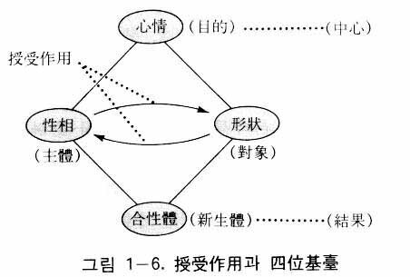
性相と形状が授受作用をするとき、両者は同格ではない。すなわち格位が異なるのである。ここで格位とは資格上の位置をいうが、資格とは主管に関する資格を意味するのである（『原理講論』一三一頁）。実際、格位とは能動性に関する位置をいうのであって、性相と形状が格位が異なるということは、性相は形状に対して能動的な位置にあり、形状は性相に対して受動的な位置にあることを意味するのである。そのとき、能動的位置にある要素や個体を主体といい、受動的な位置にある要素や個体を対象という。したがって性相と形状の授受作用において、性相が主体、形状が対象の立場になるのである。
四位基台とは、中心、主体、対象、結果の四つの位置からなる基台であって、いかなる授受作用も必ずこの四つの位置からなる四位基台に基づいて行われる。四位基台に基づいてあらゆる授受作用が行れるということは、いかなる授受作用においても、中心、主体、対象、結果という四つの位置は固定不変であるが、その位置に立てられる実際の要素は様々であることを意味する。
例えば家庭的四位基台において、中心の位置には家訓や家法あるいは祖父母が立てられ、主体の位置には父が、対象の位置には母が、そして結果の位置には家庭の平和や子女の繁殖などが立てられる。また主管的四位基台、例えば企業活動においては、中心の位置には企業の目標や理念が立てられ、主体の位置にはいろいろな人的要素（管理職や従業員）、対象の位置には物的要素（機械、原資材）、そして結果の位置には生産物（商品）が立てられるようになる。また太陽系においては、中心は創造目的、主体は太陽、対象は惑星、結果は太陽系である。人間においては、中心は創造目的、主体は心、対象は体、結果は人間（心身一体）である。このように四位基台において、実際に立てられる要素（定着物という）は様々であるが、四つの位置だけは常に中心、主体、対象、結果として固定不変なのである(20)。
主体と対象の概念
次は、主体と対象の概念をより具体的に説明する。そうすることによって授受作用の性格がより具体的に把握されるからである。先に主体は「能動的」な位置にあり、対象は「受動的」な位置にあるといったが、これをもう少し具体的に説明すれば、主体が「中心的」なとき、対象はそれに対して「依存的」であり、主体が「動的」なとき、対象はそれに対して「静的」であり、主体が「積極的」なとき、対象はそれに対して「消極的」であり、主体が「創造的」なとき、対象はそれに対して「保守的」である。そして主体が「外向的」なときには対象は「内向的」である。
被造世界において、大きくは天体から小さくは原子に至るまで、このような主体と対象の関係は限りなく多い。例えば太陽系における太陽と惑星の関係、原子における陽子と電子の関係は中心的と依存的の関係であり、動物の親と子、保護者と被保護者の関係は動的と静的の関係であり、指導する者と指導される者、与える者と受ける者の関係は積極性と消極性の関係または能動性と受動性の関係である。また家庭生活において、絶えず家庭の繁栄を図る夫は、創造的または外向的であり、家庭を内的に、こまめに切り盛りしていく妻は、それに対して保守的または内向的である。
ところで被造世界において、主体と対象の概念は相対的なものである。たとえ一個体が主体であるといっても、その個体の上位者に対しては対象となり、たとえ一個体が対象であるといっても、その個体の下位者に対しては主体となるのである。
主体と対象の格位は異なる
そのように主体は対象に対して相対的に中心的、動的、積極的、創造的、能動的、外向的であり、対象は主体に対して依存的、静的、消極的、保守的、受動的、内向的である。被造世界における、そのような主体と対象の差異の根源は原相内の四位基台の主体と対象の格位の差異にあるのである。
主体と対象の間においてのみ授受作用が行われる。すなわち格位の差がある所に授受作用が行われる。言い換えれば、二つの要素または個体が同格の場合は授受作用が行われず、むしろ反発が起こりやすいのである。陽電気と陽電気の間に行われる反発がその例である。
主体と対象の格位の差は秩序を意味する。したがって秩序のある所においてのみ授受作用が行われるという結論になる。このような主体と対象の授受作用の理論は現実問題解決のまた一つの基準となる。すでに指摘したように、今日、世界は収拾のつかない大混乱に陥りつつあるが、その理由はほとんどすべての相対的関係が円満な授受関係になりえず、相衝関係になってしまったからである。言い換えれば、相対的関係が主体と対象の関係にならないで、主体と主体の反発の関係になってしまったからである。
したがって、世界の混乱を収拾する道は秩序を正すことであり、秩序を正すためには主体と主体の相衝的な関係を調和的な関係に転換させなければならない。そのためには、主体と対象の関係の必然性または当為性が明らかにされなければならない。ここに主体と対象の関係の基準または根拠が必要となる。それがまさに原相内の四位基台理論、または主体と対象の授受作用の理論なのである。このようにして、原相における主体と対象に関する理論も現実問題解決の基準となることが分かる。
相対物と対立物
最後に、主体と対象に関連して、相対物と対立物の概念について述べる。主体と対象の原理的関係は目的を中心とした相対的関係であるために、調和的であり、相衝的ではない。二つの要素または二つの個体の関係が調和的であるとき、この二つの要素または個体を統一思想では相対物といい、その関係が相衝的であるときはこの二つの要素または個体を対立物という。相対物の間には調和があって発展がなされるが、対立物の間には相衝と闘争があって発展が停止するか、破綻をきたすだけである。共産主義は矛盾の理論、対立物の理論である唯物弁証法によって、政治、経済、社会、文化を変革しようとしたために、結局収拾のつかない破綻をきたしてしまったのである。
目的を中心とした相対物（主体と対象）の授受作用によって発展はなされるのであり、目的のない対立物の相衝作用によっては決して発展はなされない。このようにして相対物の理論は、今日の共産主義の混乱のみならず、自由世界の混乱までも根本的に収拾する方案になる。したがって、相対物の理論もまた一つの現実問題解決の基準になるのである。次は、四位基台の種類に関して説明する。
すでに指摘したように、原相における性相と形状の授受作用は中心によって二つの結果を生じる。一つは合性体であり、他の一つは新生体である。すなわち心情が中心の時は合性体となり、目的（創造目的）が中心の時は新生体を生じる。このような二つの結果は、被造物相互間の授受作用においても同じである。被造物の授受作用が原相内の授受作用に似ているからである。
これは、授受作用に二つの種類があることを意味する。すなわち心情が中心で結果が合性体である場合の授受作用と、目的が中心で結果が新生体である場合の授受作用がそれである。前者は性相と形状が授受作用をして中和体を成す場合であり（『原理講論』四七頁）、後者は性相と形状が授受作用をして神の実体対象を繁殖する場合（同上、五四頁）、すなわち万物を創造する場合
をいう。これを図に表すと図１―7のようになる。
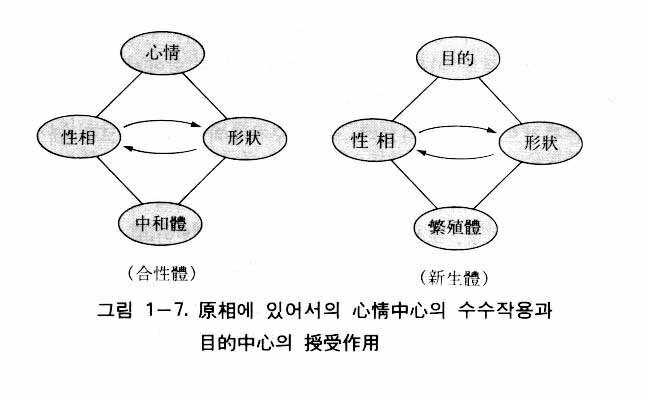
このような授受作用は被造物、特に人間においても現れる。人間は心と体の統一体であるが、それは目的（創造目的）を中心として性相と形状が授受作用によって合性体を成している状態である。また人間は心において構想し、その構想に従って手と道具を動かして絵を描いたり彫刻を彫ったりする。これを原理的に表現すれば、目的（作品を造ろうとする目的）を中心として性相と形状が授受作用をして新生体を造るということである。
合性体を成す場合の授受作用において、授受作用の前後の性相と形状は本質的に異なったものではない。すなわち性相も形状も授受作用の前後で同じである。ただ両者が結合して一つに統一されただけである。例えば男女の結婚において、男は結婚の前にも後にも同一の男であり、女も結婚の前にも後にも同一の女である。ただ違うのは、結婚後は男女が一体になったという点である。ところが新生体を成す場合の授受作用においては、授受作用をする前の性相と形状と、授受作用をした後に現れた結果とは本質的に異なっている。授受作用の結果、新生体が造られるからである。
ここで前者すなわち合性体を成す場合の授受作用を自己同一的授受作用または簡単に自同的授受作用といい、後者すなわち新生体を生じる場合の授受作用を発展的授受作用という。この両者を変化と運動という観点から見るとき、前者は授受作用の前後で性相と形状が変化しないから静的授受作用ともいい、後者は授受作用によって変化した結果として新生体が現れるから動的授受作用ともいう。
ところで、性相と形状の授受作用は、位置という観点から見るとき、実は主体と対象間の授受作用なのであり、それに中心と結果の位置を含めると、主体と対象の授受作用は結局、四位基台形成なのである。したがって位置的に見るとき、自同的授受作用は自同的四位基台となるのであり、発展的授受作用は発展的四位基台となるのである。このようにして四位基台には合性体を成す自同的四位基台と、新生体を成す発展的四位基台の二つの種類があることが分かる。
ところで四位基台には、そのほかにまた異なる二種類の四位基台がある。それが内的四位基台と外的四位基台である。この二種類の四位基台は授受作用に内的授受作用と外的授受作用があることから説明される。
「原相の内容」において、本性相は機能的部分と対象的部分の二つの部分から成っていることと、機能的部分を内的性相、対象的部分を内的形状と呼ぶことを明らかにした。すなわち本性相の内部に性相と形状があるということである。
本性相を中心として見るとき、その内部にも性相（内的性相）と形状（内的形状）があり、外部にも性相（本性相）と形状（本形状）があるということになる。性相と形状が共通要素を中心として相対的関係を結べば必ず授受作用が行われる。したがって外部の本性相と本形状の間のみならず、内部の内的性相と内的形状の間にも授受作用が行われる。前者を外的授受作用といい、後者を内的授受作用という。この内的授受作用にも中心（心情または目的）と結果（合性体または新生体）が含まれるのはもちろんである。内的授受作用によって内的四位基台が、外的授受作用によって外的四位基台が形成される。これを図に表すと図１―8のようになる。
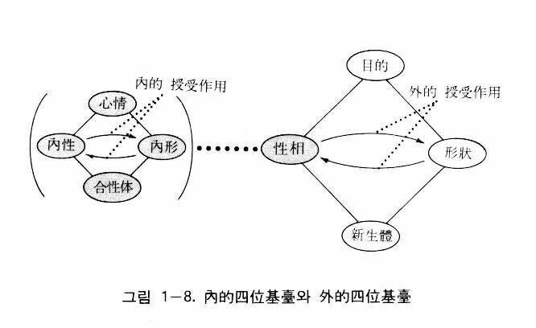
本性相を中心とする内外の授受作用は、人間においては内的生活と外的生活に相当する。内的生活とは内面生活すなわち精神生活を意味し、外的生活とは他人と接触しながら行う社会生活をいう。内的生活も授受作用であり外的生活も授受作用であるが、内的生活は心の内部で行われる授受作用すなわち内的授受作用であり、外的生活は他人との間に行われる授受作用すなわち外的授受作用である。そして、その由来がまさに原相の本性相の内的授受作用と外的授受作用なのである。このように本性相に由来する内的および外的授受作用は、人間のみならず、すべての被造物の個体において例外なく現れているのである。
すでに述べたように、性相と形状の関係は主体と対象の関係であり、中心と結果を含めた主体と対象の授受作用は四位基台形成であった。したがって位置的に見るとき、内的授受作用は内的四位基台を意味し、外的授受作用は外的四位基台を意味する。すなわち、本性相は内外に四位基台を形成しているのである。原相における性相を中心として見た、このような内的四位基台と外的四位基台の構造を「原相の二段構造」と呼ぶ。そして被造物も原相の構造に似て、個体ごとに内外に四位基台を形成しているので、それを「存在の二段構造」というのである。
すべての被造物は例外なく本性相に由来した内的および外的授受作用を現している。言い換えれば、すべての被造物が存在するために、例外なく内的四位基台および外的四位基台を形成しているのである。原相における授受作用は、心情または創造目的を中心とした円満で調和的な相互作用である。したがって万物は例外なく創造目的を中心として、円満な内的および外的な授受作用をなして内的および外的な四位基台を形成している(21)。ところが人間は内的生活（精神生活）すなわち内的四位基台と外的生活（社会生活）すなわち外的四位基台の形成において、心情（愛）や創造目的を中心とすることができず、自己中心になってしまい、相衝、葛藤、対立、闘争、紛争などの社会混乱を引き起こしているのである。
したがってこのような性格の社会混乱（現実問題）を根本的に収拾する道は、人間が内的および外的に本然の四位基台を形成することである。つまり本性相を中心とした内的四位基台および外的四位基台の理論もまた現実問題解決の基準になるのである。そのように、原相内の内的四位基台および外的四位基台は被造物の存在方式の基準となっているのである。
以上、原相における内的および外的な四位基台から成る「原相の二段構造」と、被造物における内外の四位基台から成る「存在の二段構造」について説明した。創造の相似の法則によって「存在の二段構造」は「原相の二段構造」に似ているのである。これらを図で表せば、図１―9および図１―10のようになる。
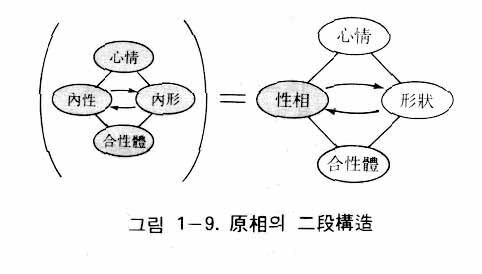
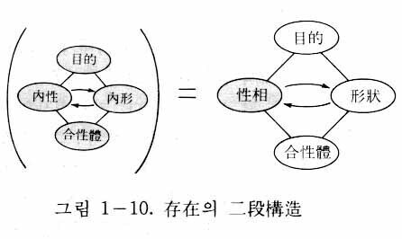
それでは、再び本論に戻って四位基台の種類を扱うことにする。先に四位基台には自同的四位基台と発展的四位基台のほかに、内的四位基台と外的四位基台という異なる二種類の四位基台があることを明らかにした。したがって四位基台は四種類あるという結論になるのである。実際には、これらが互いに組み合った次のような四位基台が形成されている。すなわち内的自同的四位基台、外的自同的四位基台、内的発展的四位基台、外的発展的四位基台である。それは図で表せば図１―11のようになる。次に、それらについて説明することにする。
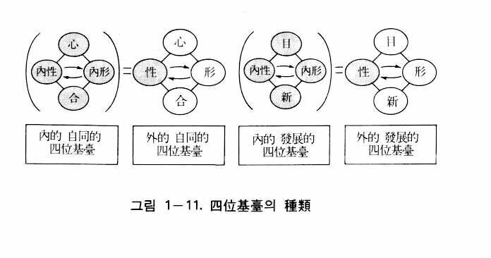
これは、内的自同的四位基台は内的四位基台と自同的四位基台が組み合わさったものである。すなわち本性相の内部の内的四位基台が自己同一性つまり不変性をもつようになったものをいう。
自同的四位基台とは、性相と形状が授受作用を行ったのち、その結果として合性体または統一体を成す四位基台を意味する。ところが、そのような四位基台が実は内外に同時に形成されるのである。例えば人間の場合、誰でも考えながら生活しているが、考えるということは内的に内的性相と内的形状が授受作用をすること、すなわち内的四位基台の形成を意味する。そして生活するとは、外的に他人と授受作用をすること、すなわち外的四位基台の形成を意味するのである。
ここでの「考え」とは漠然とした非生産的な考えであって、その考えの結果はただ心の一つの状態であるだけである。すなわち内的性相と内的形状の合性体であるだけである。そのような合性体を成す四位基台が自同的四位基台であるが、それが内的に心の中で成されるので内的自同的四位基台となるのである。
被造物の内的自同的四位基台において、その中心は心情または創造目的であり(22)、主体と対象の授受作用は円満に調和的になされ、その結果は合性体（統一体）である。すべての被造物は例外なく他者と授受作用をしているが、そのとき必ず被造物の内部において授受作用が行われ、四位基台が形成される。そのような被造物の内的自同的四位基台の原型が、本性相内の内的自同的四位基台なのである。
これは、外的四位基台と自同的四位基台が一つに組み合わさったものである。すなわち本性相の外部の（本性相と本形状の）外的四位基台が自己同一性（不変性）を帯びるようになったものをいい、神が万物を創造する直前の属性の状態、すなわち性相と形状が中和を成した状態を意味するのである。われわれは家庭的にも社会的にも他人と関係を結んで助け合い、頼り合いながら生きている。そのときの四位基台がまさに外的自同的四位基台である。
ただし、その時、内的自同的四位基台が伴うようになる。その良い例が夫婦生活である。夫と妻がそれぞれ内的生活すなわち内的自同的四位基台を成しながら、その土台の上で互いに協助し和合して夫婦一体（合性体）を成しているのであり、それが外的自同的四位基台の形成である。そのように外的自同的四位基台は内的自同的四位基台と不可分の関係をもっており、内的自同的四位基台の土台の上に外的自同的四位基台が成立するのである。
次は、万物相互間の実例として太陽と地球の例を挙げてみよう。太陽と地球は万有原力（万有引力）を授け受けながら授受作用を行っている(23)。そのとき、太陽が主体であり地球は対象である。したがって太陽は地球に対して中心的であり、地球は太陽に対して依存的である。
被造世界において、授受作用は原則的に、対象が主体を中心として回る円環運動として現れる。それは、原相内の性相と形状の授受作用の円和性を象徴的に表現しているのである。言い換えれば、被造世界において一定の円環運動が起れば、そこには必ず主体と対象間の授受作用がなされているのである。
太陽と地球の関係において、地球は太陽を中心に回りながら（公転）、地球自体も回っている（自転）。これは地球と太陽系の自己同一性を維持するためなのである。すなわち地球は自転を通じて自体の存立（自己同一性）を維持し、公転を通じて太陽と共に太陽系全体の存立（自己同一性）を維持している。地球のこのような自転と公転は、内的に地球の内部で自己同一性の維持のための授受作用が行われ、外的に太陽との間に自己同一性の維持のための授受作用が行われていることを示しているのである。一方で太陽は、太陽として自転し自己の同一性を維持しながら、同時に地球に対しては主体として地球の中心となって地球を主管しているのである。すなわち地球に万有原力（万有引力）と光を与え、地球の公転を助けながら、地球上の生物を生かしているのである。それだけでなく、銀河系の中心に対しては対象となって銀河系の周辺を公転している。そのように太陽と地球の例を見るとき、そこに内的自同的四位基台と外的自同的四位基台が同時に造成されていることを知ることができる。それは両者が不可分の関係にあるからである。
このような内的自同性の維持と外的自同性の維持を現す円環運動、すなわち自転と公転は、本然の人間生活においても同じである。ただし人間生活は精神と精神の関係を中心とした生活であるために、円環運動は物理的な運動ではなくて、原相の場合と同じように愛を中心とした円満性、調和性、円滑性を帯びた授受作用を意味する。したがって内的な自己同一性（内的自同的四位基台）の維持は、愛を中心として他人と和解しながら、よりよく他人に奉仕しようとする心の姿勢として現れる。外的な自己同一性（外的自同的四位基台）の維持は、対象においては、主体を中心とする公転運動として現れる。すなわち、主体に対する感謝に満ちた従順さとして現れる。主体においては、対象に対する主管は真理の力と愛の光として現れる。すなわち、対象をよく教えながら継続して愛を施す姿として現れる。
以上は、本然の世界において造成される内的自同的四位基台と外的自同的四位基台に対する説明であるが、今日の堕落した社会では、その模範的な例をほとんど見いだすことができないようになった。そして価値観の総体的な崩壊と社会的犯罪の増大を招いているのである。言い換えれば、原相の内的および外的な自同的四位基台理論は現実問題の解決のまた一つの重要な基準となるのである(24)。
これは、内的四位基台と発展的四位基台が組み合わさったものである。すなわち本性相内の内的四位基台が発展性、運動性を帯びるようになったものをいう(25)。ここに発展的四位基台とは、創造目的を中心として主体と対象が授受作用を行い、新生体を生じるときの四位基台を意味する。
四位基台は内外において形成される。しかし自同的四位基台の場合とは違って、発展的四位基台の場合、同時的ではなくて継時的である。すなわち、まず内的な発展的四位基台が形成され、続いて外的な発展的四位基台が形成される。
内的発展的四位基台は創造において最初に形成される四位基台である。例えば人間が製品を作るとか作品を作るとき、まず心で構想し、計画を立てる。次にその構想や計画に従って道具や機械を使用して製品（作品）を製作（創作）する。そのように構想の段階が先であり、製作の段階が後である。構想は心で行うために内的であり、製作は道具や機械を使用しながら行うために外的である。構想も製作も授受作用による四位基台の造成である。そして構想した結果も新生体であり、製作した製品も新生体である。ここに構想は漠然たる構想でなく、一定の製品を製作しようとする明確な目標に基づいた構想である。製作の場合も同様である。
したがって構想段階の四位基台や製作段階の四位基台は、いずれも目的を中心とした四位基台である。そのように目的と新生体を伴った四位基台が発展的四位基台であるが、それが内外の二段階として形成される。初めの構想段階が内的発展的四位基台、次の製作段階が外的発展的四位基台である。
人間の製作活動において、まず構想が立てられるのは、その原型が「原相の構造」にあるからである。それがまさに本性相内の目的を中心とした内的性相と内的形状の授受作用であり、ロゴスを形成する内的発展的四位基台なのである。そのように、原相の内的発展的四位基台が被造物のすべての内的発展的四位基台の原型となっているのである(26)。
それでは本性相内の内的発展的四位基台に関して、さらに詳しく説明することにする。そのために「中心＝目的」、「主体＝内的性相」、「対象＝内的形状」、「内的授受作用」、「結果＝構想」などの項目に分けて説明する。
１ 中心＝目的
内的発展的四位基台の中心は目的（創造目的）であるが、それは心情、すなわち愛そうとする情的な衝動に基づいた創造目的である。そのように神の創造は心情を動機としているために、創造の目的は愛の対象を立てて、被造世界に愛を実現することである。そうすることによって神は喜びと慰めを得ようとされた。人間は神の直接的な愛の対象として造られ、万物は人間の愛の対象として造られた。したがって人間の被造目的は、人間が互いに愛し合い、万物を愛することによって、神に喜びと慰めを与えることにあり、万物の被造目的は、互いに調和しながら人間に美と喜びを与えることにあるのである。しかし、堕落のために人間は互いに愛し合うことができなくなり、万物も愛せなくなった。そして、万物の美しさも全面的には受け入れることができないようになった。そのため神を悲しませ、万物を苦しめるような結果となったのである（ローマ八・二二）。
人間は、創造の相似の法則に従って神に似るように造られた。創造目的においても同じである。すなわち人間のすべての創造活動（制作、生産、創作など）の目的は、神の創造目的に従って神の愛を実現することである。しかし、堕落によって人間は自己中心的になり、神の愛を実現することができなくなった。そして天道に背いた結果となり、人間社会は混乱に陥るようになった。したがって今日の世界的大混乱を収拾する方案の一つは、すべての創造活動において、その目的を神の創造目的に一致させるようにすることである。したがって内的発展的四位基台の中心である目的に関する理論も、現実問題解決のまた一つの基準となるのである。
２ 主体＝内的性相
内的性相とは何か
内的発展的四位基台において、主体の立場にある要素は内的性相である。内的性相とは知情意の機能であるが、この三つの機能はそれぞれ別個の独立した機能ではなく、互いに連結されている。知的機能にも情と意が含まれており、情的機能にも知と意が含まれており、意的機能にも知と情が含まれているのである。すなわち三つの機能は統一されていて、その統一体がある時は知的機能をより多く発揮し、ある時は情的機能をより多く発揮し、ある時は意的機能をより多く発揮するのである。知情意の機能というとき、このような性格の三機能として理解する必要がある。そして内的発展的四位基台形成において、神はこのような性格の三機能を発揮したと見られるのである。
そのように知情意の三機能の性格を理解するとき、現実世界において、知情意の三機能に対応する本然の真美善の価値も共通要素をもっていることが分かる。さらにこの真美善の三つの価値に対応する文化の三大領域（科学・哲学などの学問分野、芸術分野、宗教・道徳分野）も共通要素をもっており、それらの中間領域もあることが分かるのである。
この事実は創造と関連して現実的に重要な意味をもつ。すなわちそれは、神が創造において心情を動機として創造目的を立て、その目的を中心として知情意の三機能を総動員して、全力投入しながら創造をなされたことを意味するからである（文先生は「神は天地創造において自身を全力投入した」と語られている）。そればかりでなく、再創造においても知情意の機能をすべて集中させたことを意味するのである。さらには復帰歴史において、特に末世的な混乱が続く今日、知情意のそれぞれに対応する科学、哲学などの学問分野、音楽、舞踊、絵画、彫刻、文化、詩などの芸術分野、宗教、道徳、倫理などの規範分野の三大文化分野は、神の創造理想世界の実現、すなわち統一文化世界、心情文化世界の創建に総動員されなければならないことを意味するのである。
それにもかかわらず、今日、すべての文化領域は方向感覚を喪失しているだけでなく、次第により低俗な方向に堕ちていっている。ここに共産主義や金日成主体思想のような似非改革思想が浸透して、すべての文化領域、特に芸術分野に対して、プロレタリア芸術とか民衆芸術などと言いながら、より低俗化させ、不毛化させているのである。それは背後のサタンのなせるわざである。
したがって今日、文化領域に携わっているすべての知性人、学者たちの使命が明白になってくる。それは神の創造目的を正しく理解し、創造目的を実現し、創造理想世界を建設するために、すなわち統一文化（心情文化）世界を創建するために総決起し、総進軍しなければならないということである。このように見るとき、創造に際して、原相の内的発展的四位基台の形成において、内的性相である知情意の三機能が目的を中心に総動員されたという事実も、現実問題の解決の重要な基準になっていることが分かる。
内的性相は肉心と生心の統一体である
ここに付言したいことは、人間の知情意には肉身と霊人体の知情意が共に含まれているという事実である。人間は肉身と霊人体の二重体（統一体）であるために、人間の心（本心）も肉心と生心の統一体である。したがって内的性相においても、肉身の知情意の機能と生心の知情意の機能とが複合的に統一されているのである。
肉心の知的機能は感覚と知覚の程度であり、せいぜい若干の悟性的機能を現すにすぎない。しかし生心の知的機能は感性、悟性、理性をみなもっており、普遍的真理を体得することもできる。生心はまた自己を認識し反省する能力、すなわち自我意識をもっている。大脳生理学者のジョン・エックルスや生物学者のアンドレ・グド＝ペロのような科学者が、人間にだけ自我意識があると言ったのは、人間には生心があるからなのである。
肉心の情的機能も生心の情的機能に比べれば低次元である。肉心の情的機能は生心と同じように喜怒哀楽を感じ、限られた範囲内では愛他心も発揮する。しかし生心の情的機能は高次元であって、それゆえ人間は芸術生活をすることができる。自己の命まで捧げて民族や人類を愛するのも人間が生心をもっているからなのである。
肉心の意的機能も生心の意的機能に比べれば低次元である。意的機能は意欲性であって、創造目的（個体目的と全体目的）を達成しようとする実践心（実践力）または決断心（決断力）をいう。動物の創造目的は主に物質生活（食べる、生きる、子を生むなど）を通じて達成されるが、人間の創造目的は肉身生活を基盤としながら精神生活（真善美の価値の生活）を通じて達成される。したがって意的機能においても、動物と人間の間には顕著な差異があるのである。すなわち動物の意的機能は衣食住と性に関するものであるが、人間の意的機能は肉心の意的機能と生心の意的機能が合わさったものである。しかも本然の人間においては生心の機能が肉心の機能より優位にあるために、人間の意的機能は先次的に価値（精神的価値）を追求し後次的に物質生活を追求するのである。
以上、人間の知情意の機能は、肉心の知情意と生心の知情意の統一されたものであるということを明らかにした。すなわち知的機能は二つの心（肉心と生心）の知的機能の統一であり、情的機能も、意的機能も、二つの心のそれぞれの機能の統一なのである。さらにこのように統一された知的機能、情的機能、意的機能の三つの機能までも、互いに分離されているのでなく、統一されているのである。統一思想の認識論においては、この内的性相の統一された側面を特に取り上げて、これを「霊的統覚」と呼んでいる。生心を中心として統一された認識能力という意味である。そして、このように内的性相を知情意の統一体と見る観点は、自由の問題に対して、伝統的な未解決の問題に解決を与えているのである(27)。
３ 対象＝内的形状
内的形状とは何か
次は内的発展的四位基台において、対象の立場にある内的形状について説明する。すでに述べたように、内的形状は本性相内にある形の部分であって、観念、概念、原則、数理などである。観念とは、すでに創造されたか、または将来、創造される被造物の一つ一つの具体的な表象（映像）である。概念は、一群の観念に共通した要素を心の中に映像化したものである。原則は、被造世界の自然法則と規範法則などの根本原因となる法則である。そして数理は、数的原理として自然界の数的現象の究極的原因である。
それでは内的形状を成している要素を創造と関連させてみよう。内的形状は、神の宇宙創造において、いかなる役割を果たしたのであろうか。比喩的に言えば、鋳型の役割を果たしたのである。鋳型とは、溶けた金属の液体（融解液）を注いで製品を造るときの型を意味する。創造において、融解液に相当するものが本形状、すなわち前エネルギ―である。つまり、あたかも人間が鉄の融解液を鋳型に注いで鉄製品を造るように、神は内的形状という霊的鋳型に本形状という霊的液体を注ぎ入れるような方式で万物を造られたと見るのである(28)。
内的形状は一種の鋳型である
ところで、神の内的形状内の鋳型は人工の鋳型とは異なり、外見のみの鋳型ではない。それは内容、すなわち細密な内部構造までも備えた鋳型である。人間の創造に際しての鋳型は、五臓六腑をはじめ、各種の器官、組織、細胞に至るまでの細密な構造を備えた鋳型であり、創造においてそのような鋳型の役割をなしたのが内的形状内の観念、概念、原則、数理などであると見るのである。われわれが万物を見るとき、大小に限らず、種類別に限らず、万物は必ず一定の形をもっており、一定の種類に従って共通性をもっており、一定の法則が作用し、一定の数的内容をもっていることを見ることができる。これはあたかも鉄製品の形がその鋳型に似るように、万物はみな霊的鋳型である内的形状に似たものであると見るのである。
以上説明した内的形状は、創造に直接関連したもの、すなわち被造物の直接的模型となったものである。しかし、そのほかに創造の模型とは無関係な観念、概念、原則、数理はいくらでもあるということを明らかにしておきたい。例えば「神」、「私」、「父母」、「美」、「理想」、「目的」などの観念や概念は、時空の世界に万物として造られることはないのである。これらは創造と間接的に関連はあるが、直接的に被造物になることはできないものである。
４ 内的授受作用
内的授受作用とは何か
本性相内において、新生体の形成のための授受作用によって内的発展的四位基台が形成されるが、そのときの授受作用が内的授受作用である。この授受作用もやはり主体と対象間の授受作用であって、それは内的性相である知情意の統一的機能と内的形状との授受作用を意味する。もちろん創造目的を中心とした授受作用である。この内的授受作用は要するに「考えること」、「思考すること」、「構想すること」を意味する。なぜならば本性相は神の心であり、その心の中でなされる授受作用であるからである。
ここで、「考えること」をなぜ授受作用と見るのであろうか。われわれが常識的に知っている考えとは、次のような機能を果たす心の作用である。すなわち記憶、回想、判断、関心、計画、意見、理解、想像、推測、推理、希望、思索、瞑想、解釈などの心の作用である。甚だしくは妄想までも心に現れる現象であるから、やはり考えの概念に含めることができるであろう。
このような心の現象（考え）は、過去に経験したことに対する考え、現在の状況に対する考え、そして未来のことに対する考えの三種類に区分することができる。過去に経験したことに対する考えとは、記憶に関することであり、現在の状況に対する考えとは、意見、推測、理解などに関することであり、未来のことに対する考えとは、計画、希望、理想などに関することである。ここで指摘すべきことは、いかなる考えも、あらかじめ心の中に一定量の観念（映像）が入っていなければ成立しないという事実である。そのような心の観念はひとえに経験を通じてのみ形成される。すなわち、われわれが目を閉じても、心の中で鳥を考え、花を考えることができるのは、実際に過去に鳥や花を見た経験があるからである。
観念の操作
考えるのに一定量の観念が必要であるということは何を意味するのであろうか。過去のことを思い出す考えだけでなく、現在のことを考察し、未来のことを見通す考えまでも、すべて過去に一度経験した観念をもつことによってのみ可能であるということを意味するのである。したがって過去の経験が豊かであるほど、すなわち経験した観念が多いほど、多く考えることができる。これはあたかも、貯蓄を多くしておけば、いつでも必要な時に引き出して生計を増やすことができるのと同じである。またわれわれが家財道具を多く倉庫に蓄えておけば、いつでも必要な時に引き出して使うことができるのと同じである。われわれが知識を学び見聞を広げるのも、結局は記憶の倉庫にいろいろな観念を多く貯蔵するためであり、実際、たくさん貯蔵されているのである。そのように、考えるとは倉庫から貯蔵物を引き出して必要な時に適切に使用するように、記憶の倉庫から観念を取り出していろいろと扱うことを意味するのである。そのようなプロセスを統一思想では「観念の操作」という。
観念とは、心に保管されている表象または映像のことであるが、それぞれの事物に対する映像のような簡単なものを単純観念といい、単純観念が二つ以上複合されたものを複合観念という（ただし、これは比較上の相対的な概念である）。ここで操作とは、機械のようなものをあれこれ扱うことを意味する。すなわち、必要な部品や機械を貯蔵所から取り出すこと、必要な機械と機械を連結させること、必要に応じて機械を構成部分に分解すること、部品を集めて新しい機械を組み立てること、機械の母体はそのままにしておいて二つの部品の位置を交換すること、いろいろな機械を連結させて一つに統一することなどの作業を意味するのである。
観念の操作は授受作用である
それと同様な方式で観念を扱うことが観念の操作である。すなわち、まず機械の取り出しに相当する観念の操作が「想起」であり、機械の連結の操作に相当するのが観念と観念の「連合」または「複合」であり、機械の分解に相当するのが観念の「分析」であり、新しい機械の組み立てに相当するのが新しい観念の「構成」であり、部品の位置の交換に相当するのが観念の「換位」であり、いろいろな機械の連結、統一に該当するのが観念の「総合」である。そのほかに、重要な観念操作の一つに、一定の観念を「そうでない」と否定することもあるが、これを「換質」という。要約すれば、観念の操作とは、過去に経験したいろいろな観念の中から必要なものを用いて、想起、連合、分析、構成、綜合、換位、換質などを行うことをいう。
想起は過去の経験の中から必要な観念を取り出すことであり、連合は一つの観念を考えるとき、それによって他の観念が連想されることである（例えば父を考える時に母が連想される）。いくつかの小さな観念が集まって大きな観念を成すのが構成である（例えば、土台、礎石、柱、桁、梁、大梁、たる木、屋根、部屋などの観念が集まって、家屋という大きな観念が構成される）。ある観念を小さい観念に区分するのが分析である（例えば、人体は神経系統、消化器系統、感覚器官、循環器系統、呼吸器系統、筋肉組織、秘尿器、内分泌腺、リンパ系統などから成っているという時の細分する方式）。分析したいろいろな観念を再び一つの大きな観念に総合する方式が総合である（例えば、神経系統、消化器系統、感覚器官、循環器系統、呼吸器、泌尿器などが合一したものが人体であるというときの思考方式）。一つの判断の意味を変えないようにしながら主語と述語を換える操作を換位という（例えば、「すべてのＡはＢである」を「あるＢはＡである」とすること）。そして一つの肯定判断を否定判断にするとき、その述語を矛盾概念に換えて意味が変らないようにする操作を換質という（例えば、「ＡはＢである」を「Ａは非Ｂでない」とすること）。
説明が少し長くなったが、「考え」が内的授受作用であることを理解するのに助けになるようにするためであった。
授受作用の類型
以上で、いろいろな種類の考え（回想、判断、意見、想像、理解、推理など）が、いろいろな方式の観念操作にすぎなかったことが理解できよう。そして観念操作とは、まさに授受作用のことである（図１―12参照）。そのことを具体的に説明する。
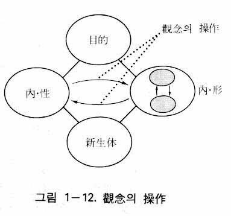
観念の操作が授受作用であるということを理解するためには、まず授受作用の類型を理解する必要がある。それは両側意識型（第一型）、片側意識型（第二型）、無自覚型（第三型）、他律型（第四型）、対比型（対照型：第五型）の五つの型の授受作用をいう。
両側意識型とは、主体と対象が共に意識をもって行う授受作用をいう。片側意識型とは、主体だけが意識をもっており、対象は無機物あるいは無生命の存在であるとき、その両者の間で行われる授受作用をいう。無自覚型とは、主体と対象の間で、無意識的に行われる授受作用（例えば、動物と植物間の二酸化炭素と酸素の交換）をいう。他律型とは、両者が共に無生命の存在であって、第三者から与えられた力によって行う授受作用（例えば、製作者の意志に従って動く機械）をいうのである。
そして対比型とは、認識または判断の場合に形成されるものである。そのとき片側意識型の場合と同様に主体だけが意識をもっているが、主体が複数の対象あるいは対象の複数の要素を比較しながら認識（判断）するのである。例えば、道を歩いている一組の男女を眺めて、二人の年齢や身ぶりなどを比較または対照してみて彼らが夫婦であると判断すること、店で商品を眺めて比較しながら良いものを選ぶこと、緑の森の中に赤い瓦の屋根があるのを見て調和の美を感じることなどは、みな対比型の授受作用である。対比による判断は主体が一方的に行っているが、それが授受作用であるのは、主体は対象に関心をもち、対象は主体に自身の姿を見せることによって、授け受ける作用になるからである。
考え（思考）も対比型の授受作用である
先に考え（思考）は授受作用であると説明したが、実はこの対比型の授受作用であったのである。すなわち人間の場合、心の中で知情意の統一体である霊的統覚（内的性相）が主体となって、内的形状の中の経験から得られたいろいろな観念を対比しているのである。霊的統覚が対比するとき、二つの要素の中の一つを主体として、他の一つを対象として両者を対比するのであり、そこにおいて、霊的統覚の関心が両者の間を往来するために、内的形状内の対比される任意の二つの要素間の作用も一種の授受作用と見られるのである（それは狭い意味での対比型の授受作用である）。結局、霊的統覚と内的形状との授受作用も対比型の授受作用であり、内的形状内の対比される任意の二要素間の作用も対比型の授受作用なのである。
授受作用（対比）の結果はどうなるであろうか。両者が完全に一致する場合もあり、ただ似ている場合もあり、一致しない場合もある。時には正反対になる場合もある。また両者が対応関係になる場合もあり、そうでないこともある。そして授受作用は目的を中心としてなされるために、目的によっても結果は異なる。そのような多様な結果を予想しながら、霊的統覚はできるだけ一定の方向へ授受作用を調整していく。これがまさに考えるということの内容なのである。考えには、回想、理解、判断、推理、希望などいろいろあるが、それらは授受作用の目的と対比の方式の違いによるのである。そのようにして、多様な考えが水が流れるように継続的につながっていくのである。
ところでこの考えの流れは、いったんまとめられる。すなわち創造しようとする被造物の鋳型（模型）になる観念（単純観念と複合観念）が決められる。それを「鋳型性観念」と呼ぶことにする。これは対比型の授受作用によって新生体が形成されたことを意味する。すなわち創造に関する鋳型は新生体としての「新生観念」なのである。しかしこれはまだロゴス（構想）としての新生体ではなく、その前段階である。したがってこれを「前ロゴス」（Pre-logos）または「前構想」ということができよう。新生観念である鋳型性観念は、その観念に必要な概念、原則、数理などの要素をみな備えており、緻密な内部構造までも備えた具体的な観念なのである。そのように新生観念が形成される段階が内的授受作用の初期段階である。そして実際の被造物に対するロゴス（構想）は後期段階において立てられるのである。
目的が中心である
以上で、考えとは心の中で行われる内的授受作用であることを明らかにしたが、それは授受作用であるために目的が中心となっている。人間の考えには目的のない漠然としたものも少なくないが、神は創造の神であるから、神の考え（構想）には初めから目的があった。それがまさに心情に基づいた創造目的（全体目的と個体目的）であった。
神が創造を考える前段階、すなわち心情を中心とした四位基台（自同的四位基台）だけの段階もあったが、心情は抑えがたい情的な衝動であるために、自同的四位基台の上に必然的に創造目的が立てられ、発展的四位基台が形成されたと見なければならない。創造後にも自同的四位基台（神の不変性、絶対性）が発展的四位基台の土台となっているという事実がそのことを裏づけている。そのように神の構想は、目的があって立てられたのである。
これは、とても重要な事実を示している。なぜならば、これもまた現実問題解決の重要な一つの基準となるからである。すなわち人間は、いかなる考えでもするようにはなっていないこと、本然の人間においては、必ず心情を動機として、創造目的の達成のために考えるようになっていることを意味するのである。したがって今日の社会的混乱を収拾するためには、自己中心的な恣意的な思考パターンを捨てて、本然の思考パターンに戻り、愛を動機とした創造目的の実現すなわち地上天国実現のために考え、行動しなければならないのである(29)。
５ 結果＝構想
結果とは何か
次は結果、すなわち構想について説明する。内的発展的四位基台の結果の位置に立てられる構想とは、具体的にいかなるものであろうか。すでに「内的授受作用」においても構想を扱ったが、その構想は「考える」という意味の構想、すなわち内的授受作用と同じ意味の構想であった。しかし、ここでいう構想は、考えた結果としての構想であって、ヨハネによる福音書一章一節にある言すなわちロゴスを意味する。それは神性の一つであるロゴスのことである。神性のロゴスのところですでに構想と理法に関して説明した。それにもかかわらず、ここで再び論ずるのは、そこで扱ったのは構想（言）としてのロゴスというよりは理法としてのロゴスであって、ここで少し説明を補充する必要があるからである。そこでロゴスに関して要点を再び紹介し、続いて若干の補充を行うことにする。
『原理講論』によればロゴスは言または理法であるが、言は構想、思考、計画などであり、理法は理性と法則の統一である。理性には自由性と目的性があり、法則性には必然性と機械性がある。したがって理性と法則の統一である理法は、自由性と必然性の統一、目的性と機械性の統一でもある。そのような理法によって宇宙万物が創造されたために、万物の中に理法が入っており、万物相互間にも、理法が作用している。そして自然界に作用している理法が自然法則であり、人間生活で守られなければならない理法が価値法則（規範）なのである。
自由性と必然性の統一が理法であるということは、自由は必然つまり法則の中での自由であり原理の中での自由であること、すなわち原理の中での理性の選択の自由であることを意味する。したがって原理や法則を無視した自由は実は放縦である。すでに述べたように、言も理法も共にロゴスであるが、言の一部が理法なのである。また理法は言と共に、神の二性性相に似た神の対象であるから（『原理講論』二六五頁）、一種の新生体であり、被造物である。そして創造は心情を動機としているから、理法も愛が土台となっているということ、したがって自然法則や価値法則の背後にも愛が作用しているということも明らかにしたのである。さらに、日常生活において理法は必ず守られなければならないが、温かい愛の中で理法が守られる生活であってこそ、そこに初めて百花が咲き乱れる春の国のような平和が訪れるということも明らかにしたのである。
構想としてのロゴス
以上が神性で扱ったロゴスの要点である。しかし、そこでは主として理法としてのロゴスを扱ったのであり、言すなわち構想としてのロゴスのことは詳細には扱わなかった。そこで構想としてのロゴスに関して具体的に説明することにする。
すでに内的授受作用の説明の中でも構想を扱ったが、それは新生体（結果物）としての構想ではなく、主として考えるという意味の構想、すなわち授受作用としての構想、観念の操作としての構想であった。そのとき、観念の操作の意味をもつ構想のほかに、新生体の意味をもつ「前構想」という概念についても、すでに触れた。すなわち創造を目的とした対比型の授受作用の結果、形成された新生体としての、概念、原則、数理などを備えた、緻密な内部構造をもった、よりいっそう具体化された鋳型（霊的鋳型）、つまり模型としての新生観念（鋳型性観念）について述べた。
しかしそのような構想は、神が宇宙を創造した言としての構想ではなくて、ただその前段階にすぎないのである。それは写真と同じような静的映像にすぎず、映画のような生動感のある動的映像ではない。それは文字どおりの設計図である。しかし、神が宇宙を創造した言であるロゴスは生命が入っている生きた新生体であり、生きた構想なのである。ヨハネによる福音書一章にはその事実が次のように書かれている。「初めに言があった。言は神と共にあった。言は神であった。この言は初めに神と共にあった。すべてのものはこれによってできた。……この言に命があった。そしてこの命は人の光であった」（ヨハネ一・一―四）。
ロゴスは構想体である
そのように万物を創造した言は、生命をもった生動する構想体であった。それは観念の操作の段階で形成された新生体としての緻密な内部構造を備えた新生観念（鋳型性観念）に生命が与えられて、動的性格を帯びるようになったものである。では、いかにして静的な性格をもった新生観念が動的性格を帯びるようになったのであろうか。内的授受作用における初期と後期の二段階の過程によってそうなったのである。すなわち霊的統覚（知情意の統一体）と内的形状との授受作用に初期段階と後期段階の二つの段階があるのである。その初期段階において、観念の操作によって新生観念（前構想）が形成される。そして後期段階において、心情（愛）の力によって知情意の機能が注入され、新生観念が活力すなわち生命を得るようになって、完成された構想として現れるのである。
ここで明らかにしなければならないことは、知情意の中に可能性として含まれていた陽性と陰性が、後期段階において表面化されて、知情意の機能の発現に調和的な変化を起こすという事実である。そのようにして完成された構想が神の対象であるロゴスであり、二性性相を統一的にもったロゴス、つまり「ロゴスの二性性相」（『原理講論』二六五頁）なのである。それがまさに宇宙を創造した言としてのロゴスであり、内的発展的四位基台の結果である構想なのである。
ロゴスの二性性相とは、内的性相と内的形状の二要素がロゴスの次元と種類によって、必要なだけ内包されていることを意味する。すなわち内的性相である知情意の機能と、内的形状である観念、概念、原則（法則）、数理などが、創造される万物の次元と種類に従って、それぞれ各様にロゴスの中に含まれている。それは内的授受作用の後期の段階において、すでに観念の操作によって形成された前構想の中に、心情の衝動力によって知情意の機能がそれぞれ次元を異にしながら注入され、前構想を活性化させたということである(30)。
６ 内的発展的四位基台説明の要約
以上で内的発展的四位基台に関する説明をひとまず終える。しかし説明が長すぎたり、滑らかでなかった点がなきにしもあらずである。そこで理解を助けるために、その内容を要約して再び紹介することにする。
内的発展的四位基台の中心
内的発展的四位基台は、創造において外的発展的四位基台の前に造られる四位基台である。四位基台の中心である目的は心情に基づいて立てられるが、それは愛の対象として人間をつくり、人間を通じて愛を実現しようとすることである。したがって人間の被造目的は互いに愛し合うのはもちろん、神を愛し万物を愛することにあるのである。しかし堕落することによって、そのような人間になれなかったために、今日の大混乱が引き起こされているのである。したがってこのような混乱を収拾する道は、すべての人間の目的を本然の被造目的に一致させることである。
内的発展的四位基台の主体
内的発展的四位基台の主体の位置に立つのは内的性相である知情意の三機能であるが、その三機能は統一を成している。そしてその三機能に対応して真美善の三価値が立てられ、三価値に対応して三大文化領域が立てられる。神は宇宙創造において創造目的を実現しようと知情意のすべての機能を投入し、全力投入された。それゆえ今日の危機に瀕している文化を救い、新文化を創造するためには、三大文化領域の知性人や学者たちは統一された理念を中心として立ち上がらなければならない。人間の知情意は肉心の知情意と生心の知情意が統一された統一心である。同時に、知情意も統一されており、その統一の面を特に強調した場合、知情意の統一体を霊的統覚という。それが人間をして霊的存在たらしめ、同時に、自我意識をもつようにせしめているのである。肉心の機能は衣食住および性の生活すなわち物質生活を追求するものであり、生心の機能は真美善の価値生活を追求するものである。そこにおいて、生心による価値生活の追求を先次的にし、肉心による物質生活の追求を後次的にするのが本然の人間の生活の姿勢なのである。
内的発展的四位基台の対象
内的発展的四位基台の対象の位置にあるのは内的形状である。すなわち観念、概念、原則、数理などの形の要素である。その中で概念、原則、数理などは創造において、みな観念の中に統一されている。そしてその観念は鋳型のような役割をしている。そのとき、単純観念が鋳型になったり、複合観念が鋳型になったりする。創造において、鋳型（霊的鋳型）は緻密な内部構造をもっている。そして鋳型に注がれる融液（霊的融液）に相当するものが前エネルギーすなわち本形状である。創造に関連する鋳型の数は無数にあり、それぞれ形が異なっている。その一つ一つが個別相なのである。個別相は人間においては個人ごとの個別相であるから、鋳型の役割は一回限りで終わる。しかし万物の個別相は種ごとのものであるから、一つの鋳型は一つの種全体の創造を網羅しているのである。
内的授受作用
内的発展的四位基台の内的授受作用は、目的を中心とした内的性相と内的形状との授受作用であるが、それは考えること、構想することを意味する。考えにはいろいろな種類があるが、大きく分けて、過去に関する考え（記憶、回想など）、現在に関連した考え（意見、判断、推理など）、未来に関する考え（計画、希望、理想など）に類別することができる。考えの最も基本要素は観念すなわち心の中に蓄えられた映像であって、考えとはこの観念をいろいろ操作する過程なのである。観念の操作には、想起、連合（複合）、分析、総合、構成、換位、換質などのいろいろな方式がある。
内的発展的四位基台における内的授受作用とは、要するに観念操作のことである。授受作用は主体である内的性相（霊的統覚）と対象である内的形状との間で行われるが、それは対象内のいろいろな観念をいろいろな方式で操作することである。観念の操作は観念と観念の対比を通じて行われる。すなわち内的授受作用には観念と観念の対比が伴っている。したがって、これは主体（霊的統覚）と対象（内的形状）間の授受作用であるが、対比的性格を帯びた片側意識型の授受作用であり、一種の対比型の授受作用なのである。
内的発展的四位基台の結果
最後に、結果の位置に立てられる構想について要約する。結果としての構想は内的授受作用で扱った構想とは異なっている。後者は考えるということ、すなわち作用を意味し、前者は授受作用の結果として現れた新生体を意味するのである。その新生体としての構想がまさにロゴスであり、万物を創造した神の言である。
内的授受作用には初期と後期の二段階があるが、初期の段階では内的形状内の観念の操作によって新生観念が形成される。それは一種の新生体であり構想であるが、それは構想の前段階としての前構想であって、生動性のない静的映像にすぎない。宇宙を創造した言としての構想は生命が入っている生きた新生体である。それは内的授受作用の後期段階において、心情の衝動力によって霊的統覚である知情意の機能が新生観念に注入されることによって、その観念が活性化され、生命を得るようになり、完成された構想として現れたものである。その構想がまさに二性性相をもったロゴスなのである。その構想の中には理法の要素も含まれている。理法は理性と法則の統一であり、自由性と必然性の統一であるが、それに関しては神性のロゴスのところで比較的詳細に扱ったので、ここでは省略することにする。
１ 外的発展的四位基台とは何か
これは、外的四位基台と発展的四位基台を組み合わせたものであって、本性相の外部での授受作用すなわち本性相と本形状の授受作用の土台となっている外的四位基台が発展性、運動性を帯びるようになったものをいう。
すでに述べたように、発展とは、新しい性質をもつ個体すなわち新生体が生まれることをいう（発展は創造を結果の面から把握した概念である）。したがって発展的四位基台とは、創造目的を中心として主体と対象が授受作用を行い新生体を生じる時の四位基台を意味するのである。そのように外的発展的四位基台は、本性相の外部に形成された外的四位基台が発展性を帯びることによって、発展的四位基台になったものである。
先に述べたように外的発展的四位基台は、内的発展的四位基台に続いて形成される。すなわち本性相を中心として見るとき、自同的四位基台の場合と同じように、発展的四位基台も本性相の内外で形成されるが、自同的四位基台の場合のように同時的ではなく継続的である。まず内的な基台が形成され、次に外的な基台が形成されるのである。
２ 内的発展的四位基台の基盤の上に形成される
四位基台とは、要するに心情または目的を中心として授受作用を行い、結果が生じる現象を空間的概念として表現したものである。したがって、内的および外的発展的四位基台も授受作用として理解すればよい。発展とは、創造を結果の面から把握した概念であるから、発展的四位基台を理解するためには、創造や製作がいかになされるかを調べればよいのである。そのことを人間の場合を例に取って説明する。
人間は何かを造ろうとするとき、まず心において構想する。例えば家を建てようとすれば、一定の目的を立てて、構想し、計画書や青写真を作る。計画書や青写真は構想を忘れないように紙面に表しただけで、やはり構想なのである。それが先に述べた内的授受作用、すなわち創造の第一段階である。
次に、創造の第二段階が始まる。これは構想に従って建築資材を用いて建築工事を行うことである。そして一定の時間ののちに、目的とした建物を完成する。そのように建築資材を用いて、構想どおりに家を建てることも授受作用であるが、これは心の外で行われる授受作用であるから外的授受作用である。
考えられた構想も以前にはなかった新しいものであり、造られた建物も以前にはなかった新しいものであって、いずれも新生体である。そのような新生体の出現は動機から見れば創造であり、結果から見れば発展である。外的授受作用において、主体は構想（実際は構想をもった人間、またはその人間を代理した他の人間）であり、対象は建築資材などである。そして主体と対象の授受作用が建築工事の遂行であり、授受作用の結果が完成された建物である。
画家が絵を描く場合を例に挙げよう。画家はまず一定の目的を立てて、構想する。時にはその構想を素描として表すこともある。それが第一段階である。構想が終われば、第二段階の作業が開始される。すなわち画幅、筆、絵の具、画架などの画具を使いながら、画家は構想したとおりの絵を描く。そして絵が完成する。
ここにおいて第一段階の構想も授受作用であり、第二段階の絵を描くことも授受作用である。そして第一段階の構想も、第二段階の絵も、いずれも以前にはなかった新しい結果であるから新生体である。そのように、絵を描くことも創造であり発展なのである。
３ すべての創造は二段階の発展的四位基台によってなされる
ここで、次のような事実が明らかになる。第一に、創造には必ず二段階の過程があるということである。第二に、第一段階は内的な構想の段階であり、第二段階は外的な作業の段階であるということである。第三に、二段階の授受作用がいずれも同一の目的を中心として成され、必ずその結果として新生体を造るということである。ここで、第一段階は内的発展的授受作用の段階であり、第二段階は外的発展的授受作用の段階である。
このような一連の原則はすべての創造活動に適用される。すなわち生産、製作、発明、芸術など、いかなる種類の創造活動にも例外なく適用される。それは、その基準が神の原相にあったからである。それが本性相の内外の授受作用、すなわち内的発展的授受作用と外的発展的授受作用である。神はまず一定の目的を立てて、万物の創造を構想したあと、材料に相当する形状（前エネルギー）を用いて、構想したとおりに万物を造られた。ここで神が構想する段階が内的発展的授受作用の段階であり、実際に万物を造る段階が外的発展的授受作用の段階である。
以上、人間の創造や製作には必ずその前に構想がなければならないということ、したがって外的発展的授受作用には必ずその前に内的発展的授受作用がなければならないということを明らかにした。そして人間の構想の時の授受作用の原型は、神の原相内の授受作用であったのである。
原相内の授受作用は、必ず四位基台を土台として行われる。それゆえ四位基台の別名が授受作用であり、授受作用の別名が四位基台である。したがって神の創造において、内的発展的授受作用が必ず外的発展的授受作用に先行するということは、内的発展的四位基台が必ず外的発展的四位基台に先行して形成されることを意味するのである。言い換えれば、創造においては必ず内的発展的四位基台と外的発展的四位基台が連続的に形成されるのである。これを「原相の創造の二段構造」という。これを図に表せば図１―13のようになる。人間の場合、現実的な創造活動の時にも、内的および外的な四位基台が連続的に形成される。そして人間の創造活動において、連続的に形成される二段階の四位基台を「現実的な創造の二段構造」というのである。
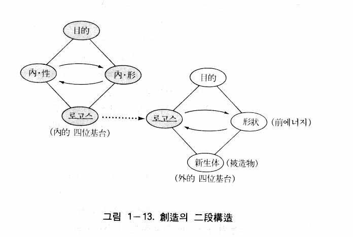
ここで次のような疑問が生ずるかもしれない。すなわち「創造には必ずまず構想が立てられなければならない」というように、分かりやすく表現すればよいのに、なぜ内的発展的四位基台とか、外的発展的四位基台とか、二段構造などの難しい表現を使うのか、統一思想はなぜ分かりやすい言葉も難しく表現しようとするのか、という疑問である。結論から言えば、それは統一思想が天宙の根本原理を扱っているからである。
根本原理とは、霊界と地上界を問わず、存在世界に現れるすべての現象に共通に適用される根本理致をいう。この根本理致すなわち原理は深くて広い内容を含んでいるが、それを表す用語はできるだけ簡単なものでなくてはならない。その例の一つが「二性性相」すなわち「性相と形状」である。この用語は人間の心と体を表す用語であるだけでなく、動物、植物、鉱物、さらには霊人体や霊界のすべての存在がもっている相対的属性を表す用語である。そのように二性性相の意味は大変深くて広いのである。しかし二性性相の用語はそのままでは理解しがたいので、易しく詳細に説明する必要があるのである。そして時には例えや比喩も必要である。統一思想において扱う根本原理は五官で感じられない神と霊的世界に関するものが大部分であるから、なおさらそうである。
ところで、例えや比喩を挙げながら行う説明は、ただ根本原理を明らかにする手段にすぎず、根本原理それ自体ではない。根本原理それ自体はあくまでも神の「二性性相」または「性相と形状」なのである。同様に、「授受作用」、「四位基台」、「二段構造」なども根本原理に関する概念すなわち基本概念であるので、それらの用語を取り除くことはできない。「内的発展的四位基台」、「外的発展的四位基台」、「創造の二段構造」なども、そのような根本原理を含んだ概念である。
さらには「一分一秒を惜しみながら生きなければならないこの忙しい時に、そのような難しい概念をわれわれが学ばなくてはならない必要がどこにあるのか」という疑問もありうるであろう。それは、そのような基本概念を正しく把握することによってのみ、現実のいろいろな難問題を根本的に解決することのできる基準が明らかになるからである。
４ 外的発展的四位基台の構成要素
次は、再び本論に戻って、「外的発展的四位基台」の説明を継続する。先に人間の創造活動において、外的発展的四位基台は必ず内的発展的四位基台の次の段階として形成されるので、そのような二段階過程を「現実的な創造の二段構造」といったが、神の創造においても、同様な創造の二段構造が形成される。本性相の内外において形成される内的発展的四位基台と外的発展的四位基台がそれである。これは原相内において創造の時に形成される四位基台であるから、「原相の創造の二段構造」という。
原相内の内的発展的四位基台については、すでに「内的発展的四位基台」の項目で詳細に説明したので、ここでは説明を省略する。ただ内的発展的四位基台の四つの位置において、中心の位置には目的が立てられ、主体の位置には内的性相（霊的統覚）、対象の位置には内的形状、結果の位置には構想が新生体として立てられるということと、主体と対象の授受作用は考える過程すなわち観念の操作の過程であるということを想起するだけにする。
原相内の外的発展的四位基台も四つの位置、すなわち中心、主体、対象、結果から成るのはもちろんであるが、そのとき中心は内的な四位基台の場合と同様に心情に基づいた創造目的であり、主体は本性相であり、対象は本形状である。そして授受作用によって形成される結果は新生体としての被造物である。次にこの四つの位置、すなわち中心、主体、対象、結果の位置にそれぞれ立てられるところの、目的、本性相、本形状および被造物に関して具体的に説明することにする。目的は、内的発展的授受作用の場合の目的すなわち創造目的と同じであるから、ここでは省略し、主体＝本性相、対象＝本形状、外的授受作用、結果＝被造物の項目に分けて説明する。
主体＝本性相
原相の外的発展的四位基台は本性相と本形状との授受作用の基台である。ここに本性相が主体の立場にあるのは言うまでもないが、本性相は、具体的にいかなるものであろうか。それはまさに、内的発展的四位基台の結果の立場にある構想である。すなわち目的を中心として内的性相と内的形状が内的授受作用を行って、新生体として現れたみ言であり、ロゴスであり、構想である。ここに内的授受作用は考えること、すなわち思考の過程である。
すでに述べたように、内的授受作用の過程には前段階と後段階の二段階がある。前段階は観念の操作が進行する過程であって、そこにおいて前構想が形成される。そしてあとの段階では霊的統覚から知情意の機能が、その属性である陽性・陰性の影響を受けながら前構想に注入されて、前構想が生命をもつ完成した構想として現れるようになるのである。そのようにして完成した構想がまさに二性性相をもつロゴスなのである。そのようにしてロゴスは新生体として本性相の内部に形成されたものであるが、主体（本性相）と対象（本形状）の授受作用において、霊的統覚に保持されながら、主体として作用するのである。
ここで明らかにしておきたいことは、内的授受作用によって内的性相である霊的統覚（知情意の統一体）が内的形状内に形成された新生観念に注入されるとしても、霊的統覚自体は本来無限性を帯びた機能であるから、その一部が新生観念の中に注入されたのちにも、依然として内的性相としての知情意の統一的機能はそのまま維持しているということである。したがって本性相と本形状間の授受作用において、主体としての本性相は霊的統覚に保持された状態にあるロゴスなのである。
対象＝本形状
すでに「神相」のところで説明したように、本形状は無限応形性の究極的な質料的要素である。質料的要素とは、被造物の有形的要素の根本原因を意味し、無限応形性とは、あたかも水の場合と同じように、いかなる形態でも取ることのできる可能性を意味するのである。
質料的要素は物質の根本原因であるが、科学の限界を超えた究極的原因なので、統一思想ではこれを前段階エネルギー、または簡単に前エネルギーと呼んでいる。次に述べるように、水が容器に注がれれば容器の形態を取るように、本形状が本性相の構想の鋳型（霊的鋳型）の中に注入されて、現実的な万物として造られるようになるのである。
外的授受作用
次は、外的授受作用について説明する。神の性相と形状の授受作用によって万物が創造されたという統一原理や統一思想の主張が正しいことを明らかにしようとするのである(31)。外的授受作用も四位基台を土台として行われる。そのとき分かれていた主体と対象が再び合わさって一つの新生体、すなわち万物になるというように説明したが、それはあくまでも理解を助けるための方便的な説明であった。神は時間と空間を超越しているから、神の世界には内外、上下、遠近、広狭がない。大中小もなく無限大と無限小が同じである。また先後がないので過去、現在、未来がなく、永遠と瞬間が同じである。
時空を超越した神の世界で授受作用が行われているのであるが、その授受作用を説明の便宜上（理解の便宜上）、主体と対象が同一空間を重畳的に占めながら授受作用を行っていると見ることができる。例えば、人間の霊人体（主体）と肉身（対象）は、空間的に離れていたものが一つになったというのではなく、本来から同一の空間を重畳的に占めていながら授受作用をしているが、それと同じだということができよう。そのような観点から、原相内の外的授受作用を同一空間を重畳的に占めている主体と対象間の授受作用と見て、また授受作用によって生じた新生体である被造物もやはり同一空間を重畳的に占めていると見て、論理を展開することにする。
すでに述べたように、外的発展的四位基台の主体である本性相は霊的統覚に保持された状態にある新生体としてのロゴスであり、対象である本形状は無限応形性をもった前エネルギーである。このような主体と対象が重畳して同一空間を占めたまま授受作用を行い、新生体である被造物（例えば、馬のような動物）を産出（創造）するようになるが、そのとき産出された被造物も同一の空間を重畳的に占めると見るのである。以上で授受作用が行われる四位基台の四つ位置は、分かれている四つ位置ではなく、四つの定着物を重ねている一つの位置である。その一つの位置において、互いに重なったまま、目的を中心として主体と対象が授受作用を行い、その結果物として被造物が生じたと見るのである。
それでは授受作用の具体的な内容を説明することにする。重畳した状態での授受作用とは、本形状である前エネルギーが本性相内に形成された構想（ロゴス）の鋳型（霊的鋳型）の中にしみ込むということである。先に述べたように、本性相内の内的授受作用の初段階において形成された緻密な内部構造を備えた新生観念としての鋳型性観念が、次の段階で心情の衝動によって生命を賦与されて現れたものが完成した構想であった。この完成した構想は生命をもつ鋳型性観念であり、生きている鋳型である(32)。この鋳型は初期段階の緻密な内部構造を備えた鋳型性観念が後期段階で活力を与えられたものである。しかしいくら活力を与えられたとしても、そしていくら内部構造が緻密であるとしても、鋳型（霊的鋳型）であることには違いない。したがって実際の鋳型に鉄の融液を注入して鉄製品を造る場合と同じく、この鋳型性観念の中にも必ず融液に相当する本形状の質料（前エネルギー）が注入されうる空間があるようになっているのである。
言い換えれば、鋳型の空間は必ず融液が入って満たされるようになっているのである。本性相と本形状の間にこのような現象が行われるとき、それがまさに授受作用なのである。すなわち本性相の鋳型性観念内の緻密な空間に、本形状の質料的要素が浸透して満たすのが授受作用なのである（そのとき、本形状の中に可能性として潜在していた属性である陽性と陰性が表面化され、質料的要素の浸透の流れに調和的な変化を起こす）。なぜこのような現象が授受作用になるかといえば、本性相は鋳型の空間でもって本形状に質料の浸透の機会を提供し、本形状は質料でもって空間を満たすことによって、その空間の存在目的を果たすようになるからである。
以上、理解を助けるためにいささか模型的に表現したが、このような作用が同一の位置において、主体と対象が重畳した状態でなされたのである。これが神の宇宙創造において、原相の内部でなされた外的発展的授受作用の真の内容であったのである。
ここで一つ付け加えることは、この授受作用は片側意識型の授受作用であるということである。なぜならこの授受作用において、主体は知情意の統一体である霊的統覚（鋳型性観念を含む）であり、対象は本形状（質料）であるからである。
結果＝被造物
結果としての被造物は、創造目的を中心として本性相と本形状が授受作用をすることによって形成された新生体である。それが『原理解説』（一九五七年、韓国語版）に書かれた「被造世界は二性性相の主体としておられる神の本性相と本形状が創造原理によって形象的または象徴的な実体として展開された……神の実体対象である」（二五頁）という文章の中の「実体対象」であり、「神の二性性相をかたどった個性真理体」（同上、二五頁）であり、「主体と対象の二性性相の実体的展開によって創造された被造物」（同上、二四頁）なのである。そして『原理講論』に書かれた「被造物はすべて、無形の主体としていまし給う神の二性性相に分立された、神の実体対象である」（四七―四八頁）というときの「実体対象」なのであり、「このような実体対象を我々は個性真理体と称する」（同上、四八頁）というときの「個性真理体」なのである。
そこにおいて統一原理（『原理解説』および『原理講論』）でいう「実体対象」や「個性真理体」という概念は、被造物を見る観点によって表現を異にする概念である。「実体対象」は、客観的、物質的側面を浮き上がらせた概念であり、ロゴスのように心に描かれた観念的な対象ではなくて、三次元の空間的要素を備えた客観的、物質的な対象であるという意味である。それに対して「個性真理体」は、被造物が神の二性性相に似たものであるという側面を浮き上がらせた概念である。被造物はすべて相似の法則によって創造されたために、例外なく個性真理体なのである。
相似と外的授受作用
被造物が神の二性性相をかたどったというとき、外的授受作用の観点から見て、その相似の内容は具体的にいかなるものであろうか。すでに説明したように、被造物は本性相と本形状が創造目的を中心として授受作用をした結果として現れた新生体であった。そのとき、本性相は生きている鋳型性観念を保持した霊的統覚、または霊的統覚に保持された生きている鋳型性観念であり、本形状は質料的要素である。そして生きている鋳型性観念がロゴス、すなわち二性性相を帯びたロゴスである。
ロゴスの二性性相とは内的性相と内的形状の二要素をいうが、そこにおいて内的性相は知情意の機能であり、内的形状は観念の操作によって形成された新生観念としての鋳型性観念を意味する。すなわちロゴスは知情意の機能と鋳型性観念が複合された新生体なのである。したがって最終の新生体である被造物の中に含まれた本性相の部分は、内的性相に相当する霊的統覚の一部としての知情意の機能と、内的形状に相当する鋳型性観念である。そして本形状の質料的要素はそのまますべて被造物に含まれている。それが「鋳型性観念の緻密な空間の中に本形状の質料的要素が浸透した」ということの意味なのである。そのように外的授受作用によって、本性相の要素と本形状の要素が被造物を構成したのである。
ここで一つ明らかにしておきたいことは、本性相と本形状はその属性である陽性（本陽性）と陰性（本陰性）を帯びながら被造物を構成したという事実である。そうして被造物はすべて、神の本性相と本形状の要素と、本陽性と本陰性の要素を帯びるようになったのである。
そして、本性相の中に含まれた鋳型性観念はそのまま個別相でもあった。結局、被造物は神の属性（本性相と本形状、本陽性と本陰性、個別相）をみな引き受けたという結論になる。そのような被造物（個体）を個性真理体という。それが統一原理でいう「被造物は神の二性性相をかたどった個性真理体である」ということの内容なのである。
ロゴスと被造物の関係
次は、ロゴスと被造物の関係について述べる。聖書には、神が万物を言でもって造られたと記録されているが（ヨハネ一・一―三）、その言がまさにロゴスであった（『原理講論』二六五頁）。ところが『原理講論』には、「ロゴスは神の対象」であり、「ロゴスの主体である神が、二性性相としておられるので、その対象であるロゴスも、やはり二性性相とならざるを得ない」（同上、二六五頁）、「もし、ロゴスが二性性相になっていないならば、ロゴスで創造された被造物も、二性性相になっているはずがない」（同上、二六五頁）とある。これは被造物の二性性相はロゴスの二性性相に似ており、ロゴスの二性性相は神の二性性相に似ているということを意味する。したがってロゴスの二性性相と神の二性性相が完全に同一なものであるかのような印象を受ける。
しかし統一思想から見るとき、神の二性性相は本性相と本形状であるが、ロゴスの二性性相は内的性相と内的形状である。すなわち神の二性性相とロゴスの二性性相は同じではない。したがって被造物が神の二性性相に似るというのは、神の本性相と本形状に似るという意味であり、ロゴスの二性性相に似るということは、ロゴスの内的性相と内的形状に似るという意味なのである。ここで万物が似ているロゴスの内的性相と内的形状とは、具体的にいかなるものであろうか。
すでに述べたように、ロゴスは、内的授受作用の後期段階において霊的統覚の一部が前段階で形成された新生観念（鋳型性観念）に注入されることによって生じた完成した構想であり、生きた構想であった。したがってロゴスの内的性相は、鋳型性観念の中に注入された一部の知情意の機能であり、内的形状は鋳型性観念それ自体なのである(33)。そのような内容をもつ内的性相と内的形状がロゴスの二性性相である。『原理講論』において、被造物の二性性相はロゴスの二性性相に似ているというときのロゴスの二性性相とは、まさにそのような内容の二性性相であったのである。
ここで指摘するのは、空間的な三次元の実体である被造物の姿がそのままロゴスの二性性相に似ているのではないということである。ロゴスは生きた構想であり、活力を帯びた観念にすぎない。それは動く映像のようなものであり、夢の中で会うようなものである。人間や万物がロゴスの二性性相に似ているということは、そのような生きた映像に似ていることを意味する。夢の中の人間や万物は物質的な体をもっていないが、その他の面では現実の人間や万物と似ている。それが物質的な体まで備えた存在になるためには、神の二性性相に似なければならない。すなわち神の本性相と本形状に似なければならないのである。
それでは、いかにすれば神の本性相と本形状に似るようになるのであろうか。それは外的授受作用によって、本形状である質料的要素（前エネルギー）が本性相である生きた鋳型の緻密な空間の中へ浸透することによって、似るようになるのである。そのような授受作用を通じて、動く映像が物質的な体を備えるようになり、現実的な実体となるのである。そしてそのとき被造物は、神の二性性相に似た被造物となるのである。
以上で神の二性性相とロゴスの二性性相が具体的にどのように違うか、明らかにされたと思う。それと同時に、被造物が神の二性性相に似ているという場合と、ロゴスの二性性相に似ているという場合の、その違いも明らかになったと思う。次は、授受作用に関連した正分合作用について説明する。
正分合作用とは何か？
すでに述べたように授受作用は四位基台を土台として行われる。すなわち授受作用がなされるには、必ず中心と主体と対象および結果の四つの位置が立てられなければならない。言い換えれば、授受作用の現象を空間的側面から把握した概念が四位基台である。ところですべての現象は空間性と時間性をもっている。したがって授受作用の現象も時間的側面から把握することができるのであり、時間的に把握した概念が正分合作用である。つまり、授受作用を四位基台が定立される時間的順序に従って扱った概念が正分合作用なのである。まず中心が定められ、次に主体と対象が定められ、最後に結果が定められるというように授受作用を三段階過程から把握した概念が正分合作用である。これを図で表せば図１―14のようになる。
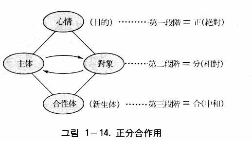
『原理講論』に「四位基台は正分合作用によって、神、夫婦、子女の三段階をもって完成されるのであるから、三段階原則の根本となる」（五五頁）とあるのも、四位基台は授受作用の空間的把握であり、正分合作用は時間的把握であることを示している(34)。したがって正分合作用の内容は、授受作用の場合と全く同じである。すなわち心情を土台とした目的を中心として、主体と対象が円満で調和的な相互作用を行うことによって合性体または新生体を成すという内容は、授受作用の場合と完全に一致しているのである。したがって正分合作用の種類も授受作用の種類と対応しているのであって、内的自同的正分合作用、外的自同的正分合作用、内的発展的正分合作用、外的発展的正分合作用という四種類の正分合作用があるのである。
正分合と正反合
時間性を帯びた正分合作用の概念は、特に共産主義の唯物弁証法との比較において意義がある。共産主義の哲学は唯物弁証法に基づいているが、それは自然の発展に関する理論であって、矛盾の法則、量から質への転化の法則、否定の否定の法則の三つの法則から成っている。これらはヘーゲルの観念弁証法から弁証法を受け継いで、それを唯物論と結びつけたものとして知られている。ヘーゲルはさらに弁証法が進行する形式も提示している。それが正―反―合、または定立―反定立―総合、または肯定―否定―否定の否定の三段階形式である。
マルクス主義はこのヘーゲルの弁証法の形式を批判的に継承して、自然と歴史の発展を説明するのに用いた。すなわち事物の発展において、事物（肯定または正）は必ずその内部に自体を否定する要素（反）をもつようになり、両者が対立するようになるが（この状態を矛盾という）、その対立（矛盾）は再び否定されて（否定の否定）、いっそう高い段階に止揚される（合）と説明している。これが正―反―合、または肯定―否定―否定の否定、あるいは定立―反定立―総合の三段階の弁証法的な進行形式である。ここで止揚とは、事物が否定され、さらに否定されるとき、その事物の中の肯定的要素は保存されて新しい段階へと高められることをいう。
鶏卵からひよこが孵化する過程を考えてみよう。鶏卵がひよこになるには、正としての鶏卵は、その内部にそれ自体を否定する要素（反）である胚子を持つようになり、その胚子が大きくなるにつれて両者の対立（矛盾）も大きくなる。そしてついにこの矛盾が止揚されて、鶏卵は否定される。そのとき、肯定的要素である黄身、白身は養分として胚子に吸収されて（保存、止揚されて）、ひよことして孵化される（合）。
マルクス主義はこの正―反―合の形式を社会発展の説明にも適用する。例えば資本主義から社会主義へと発展する過程の説明に正―反―合の形式を適用して、次のように主張する。すなわち、資本主義社会（正）は必ず内部にそれ自体を否定する要素であるプロレタリア階級（反）をもつようになる。プロレタリア階級の成長に従って階級対立（矛盾）は激化し、ついに資本主義体制は破れる。そのとき資本主義の肯定的成果（経済成長、技術発展など）はそのまま保存されながら、よりいっそう高い段階である社会主義（合）へ移行するというのである。
正反合理論の批判
それでは正反合の形式を批判し、それが正しいか誤りかを明らかにしよう。その正誤の基準は自然や社会の発展の事実がこの正反合の形式と一致するか否かにある。マルクス主義は長い間、唯物弁証法を科学であると主張してきた。ゆえに弁証法の進行形式も客観的な事実と一致する科学的な形式であると見なければならない。そしてまた、マルクス主義哲学は現実問題（資本主義の構造的矛盾と病弊）を解決するために現れたと主張する哲学でもあるのである。
ところが唯物弁証法も、弁証法の進行形式の理論も、共に客観的事実と一致しないことが明らかにされた。そして現実問題の解決にも失敗してしまった。これは唯物弁証法も、弁証法の進行形式の理論も、共に間違いであったことを証明するものである。次に、そのことをより具体的に説明することにする。
まず鶏卵の孵化の事実を分析しながら、この正反合の形式を批判することにする。第一に、鶏卵内の胚は鶏卵の発展のために、のちに否定的要素として発生したものではなくて、殻や白身や黄身と同じく、初めから鶏卵の一部であったのである。したがって胚は自身もその一部である鶏卵を否定することはできない。もし胚が鶏卵を否定しようとすれば、初めから鶏卵の中にあるのではなくて、途中で鶏卵の中に対立として生じたものでなくてはならない。そうであってこそ正反合の本来の意味に合うのである。ところが実際は、胚は初めから鶏卵の一部としてあったのである。
第二に、黄身と白身が胚の養分として保存されていることは明らかに肯定であるにもかかわらず、否定として扱うのは筋道の通らない無理な主張である。第三に、孵化の瞬間に殻が破れて、すなわち否定されて、胚が新しい段階のひよこになるのではないということである。事実は、すでに完成したひよこ（新しい段階のひよこ）が、くちばしでつついて殻を破って出てくるのである。以上のことにより、鶏卵の孵化の事実は弁証法的発展の正反合形式に合わないことが分かる。
次は社会発展に適用した正反合の発展理論を批判する。資本主義社会（正）がその内部のプロレタリア階級（反）と対立することによって、よりいっそう高い段階である社会主義社会（合）へ移行するということ、そのとき資本主義社会の成果がそのまま保存されるということも、実際の歴史的事実と合わなかった。第一に、英国や米国、フランス、日本などの資本主義の発達した国家がまず社会主義社会に移行しなければならなかった。しかし、そうならなかっただけでなく、この公式が適用されない後進国において社会主義が立てられたのである。第二に、後進国に社会主義が立てられるとき、革命に先立って、わずかながら芽生えていた資本主義の成果が保存されるどころか、むしろ損傷を受けて、経済は後退する結果になってしまったのである。レーニンが革命後、新経済政策を行わざるをえなかった理由もそこにあったのであり、鄧小平が文化大革命後、中国経済の破綻を自認した理由もここにあったのである。
このように見るとき、弁証法的進行の正反合形式を社会発展に適用した理論も、実際の歴史的事実と合わなかったことが分かる。特に最近に至り、東ヨーロッパの社会主義国はもちろん、資本主義国家より、いっそう発展しているはずであった社会主義の宗主国であるソ連までも、経済的破綻をきたし、その結果ついに崩壊してしまったのである。この事実は、唯物弁証法の正反合の発展形式がいかに虚偽的なものであるか、よく示しているのである。このように、自然現象とも合わず、歴史的事実とも合わない唯物弁証法の正反合の発展形式理論は、現実問題の解決に完全に失敗してしまったのである。
正反合理論と現実問題の解決の失敗
それでは、正反合の理論はなぜ現実問題の解決に失敗したのであろうか。その原因を分析することにする。
失敗の第一の原因は、この正反合の形式において目的が立てられなかったためである。目的のない発展は、定められた方向がないために、あてどもないものとならざるをえない。鶏卵の場合、ひよこという目標（目的）が定められており、適当な温度と湿度が与えられれば、その目標の方向に発展運動が行われて、ついにその目標に到達するのである。目標（目的）がないところには発展はありえないのである。社会発展においても同様である。資本主義社会において、資本家は利潤の極大化を追求し、労働者は賃金の引き上げと待遇の改善を追求するだけであって、ごく少数の一部の職業革命家だけが社会主義を目標としているのである。したがって社会発展という面から見るとき、両階級の対立は共通の目的のない対立なのであって、新しい段階への到達は初めから期待しがたかったのである。
失敗の第二の原因は、正と反の関係を対立、矛盾、闘争の関係と見ることによって、協助や和合を阻害する結果を招いたからである。社会の発展は、社会の構成員である人間と人間の円満な協助関係においてなされるのである。ところが哲学的に発展の法則（弁証法）と形式（正反合）を対立、矛盾、闘争の関係によるものと規定してしまった。したがってすべての人間関係は矛盾、敵対の関係であるというのが常識のようになってしまい、和合や協助はむしろ非正常的、異例なもののように感じられるまでになったのである。このような社会環境において、いかにして発展がなされるであろうか。万一、その社会の中に、協助によって発展がなされるという思想をもった人がいたとすれば、彼は思想的異質感のために疎外されるか、またはその社会に抵抗するようになるであろう。
発展は調和的な協助関係によってなされるということは、そのまま自然の発展にも適用される命題である。例えば先に述べた鶏卵の孵化の場合、胚、黄身、白身、殻が、ひよこを生むという共通目的のもとで、互いに協助し合いながら相互作用を行うことによって、初めてひよこが生まれるのである。
そのように自然界の発展や社会の発展は、必ず共通の目的または目標を中心として、いろいろな要素または個体の間に円満な協助と協力の関係が成立することによってなされるのである。ところがマルクス主義の正反合の理論では、目的も協助関係も認めなかったために、その理論は偽りとなり、現実問題の解決にも失敗してしまったのである。
ここで正反合の代案が正分合作用であることが理解されるであろう。正分合作用の理論は授受作用の理論であり、四位基台の理論である。この正分合作用の三段階過程においてのみ、目的を中心とした円満な相互協助関係が成立し、その結果として、合である新生体が現れるのであって、それがまさに発展なのである。
ところで、ここで指摘しておきたいのは、正反合の三段階と正分合の三段階は決して対応するものではないということである。三段階という点で同じであるだけで、両者の正の概念も異なり、反と分の概念も異なり、両者の合の概念も異なっているのである。正反合の正は事物を意味するが、正分合の正は目的や心情を意味している。また正反合の反は正である事物に対立する否定的要素を意味するが、正分合の分は分立物または相対物という意味の、相対的関係にある主体と対象をいう。そして正反合の合は対立物が対立を止揚して一つに総合されることを意味するが、正分合の合は主体と対象の授受作用によって、それまでになかった新しい個体（新生体）が現れることを意味するのである。
こうして授受作用（発展的授受作用）を時間的に把握した概念である正分合の理論が、発展に関する現実問題の解決に失敗したマルクス主義の正反合の理論に対する唯一の代案であることが分かる。以上で原相の主要な内容に関する説明を終える。次は、原相構造に関連した事項である原相構造の統一性と創造理想について説明する。
すでに述べたように、原相構造とは、神相における性相と形状の相互関係であり、その関係が明らかにされることによって、多くの現実問題の根本的な解決が可能になったのである。それは大部分の現実的な難問題は関係上の問題であって、関係の正しい基準から逸脱したことによって引き起こされた問題であったからである。言い換えれば、原相構造が明らかにされることによって、関係の本然の基準が明らかになったために、すべての問題が根本的に、また恒久的に、解決されるようになったということである。ここで原相構造に関してつけ加わえることは、原相の説明において、なぜ構造という概念が必要なのかということと、構造という面から見た原相の真の姿はいかなるものかということである。
本来、構造という用語は、一定の材料によって造られた構成物、例えば建築物や機械などに関して、その材料の相互関係を表すときに用いられる。また、いろいろな有形物の仕組みを分析して研究するときに用いられる。例えば人体構造、社会構造、経済構造、分子構造、原子構造などがその例である。すなわち事物を分析し、研究するとき、構造の概念が必要なときが多いのである。そのような側面を拡大適用すれば、意識や精神など無形的存在を分析するのにも使うことができるであろう。実際、意識構造とか精神構造という用語が使われているのである。
無形なる神の属性の関係を調べるのに構造の概念を使用したのは、まさにそのような立場からである。すなわち構造の概念を用いることによって、神の属性、特に性相と形状との関係を詳細に分析することができるからである。しかし、いくらそうであっても、そして性相と形状の相対的関係にいろいろな種類があるとしても、原相の世界は時空を超越した世界である。それでは構造概念または時空概念から類推する原相の真の姿は、いかなるものであろうか。
それは一言で、統一性であると表現するしかない。空間がないために位置がなく、したがって前後、左右、上下がなく、内外、広狭、遠近がなく、三角形、四角形などの空間もない。無限大と無限小が同じであり、すべての空間が一つの点にすべて重畳されている多重畳の世界である。それと同時に、上下、前後、左右、内外が限りなく広がっている世界である。
また、原相の世界は時間のない世界である。したがって時間観念から類推すれば、過去、現在、未来が今の瞬間に合わさっている。それはあたかも、映画のフィルムの一巻きの中に過去、現在、未来がみな入っているのと同じである。時間も瞬間の中に合わさっている。すなわち瞬間の中に永遠があり、瞬間が永遠へつながっているのである。したがって瞬間と永遠が同じである。これは、原相の世界が一つの状態（性相と形状、陽性と陰性が統一された状態）の純粋持続であることを意味する。いわば「状態の純粋持続」が原相世界の時間である。
要約すれば、原相の世界は純粋な「統一体」である。空間と時間だけでなく、その他のすべての現象（堕落と関連した非原理的な現象は除いて）の原因が、重畳的に一点に統一されている世界である。言い換えれば、時間、空間をはじめとする宇宙内のすべての現象は、この統一された一点から発生したのである。あたかも一点から上下、前後、左右に無限に長い直線を無限に多く引くことができるように、この統一性から時空の世界が上下、前後、左右に無限に広がっているのである。
それゆえ宇宙がいくら広大無辺で、宇宙の現象や運動がいくら複雑であるとしても、その時空と現象を支配している基本原理は、この一点、すなわち統一性にあるのである。それが統一の原理であり、授受作用の原理であり、愛の原理である。例えば授受作用の土台である四位基台という一点（原点）から空間が展開されたのであり、正分合作用という一点から時間が展開されたのである。
創造理想とは何か
創造理想が原相構造と関連があるのは、それが四位基台の中心である創造目的と直接関連しているからである。一般的に理想とは、人間が希望または念願することが完全に実現された状態をいう。それでは人間は、なぜ希望し念願するのであろうか。喜びを得るためである。では喜びはいかなる時に生ずるのであろうか。愛が実現された時である。なぜならば喜びの土台が心情の衝動性、つまり愛の衝動性にあるからである。統一原理では、神の喜びがいかなる時に生ずるかということに対して、次のように書かれている。
「このように被造物が善の対象になることを願われたのは、神がそれを見て喜ばれるためである」（『原理講論』六四頁）。
「創造目的は喜びにあるのであり、喜びは欲望を満たす時に感ずるものだからである」（同上、一一八頁）。
「自己の性相と形状のとおりに展開された対象があって、それからくる刺激によって自体の性相と形状とを相対的に感ずるときここに初めて喜びが生ずるのである」（同上、六五頁）。
「神が被造世界を創造なさった目的は……三大祝福のみ言を成就して、天国をつくることにより、善の目的が完成されたのを見て、喜び、楽しまれるところにあったのである」（同上、六四―六五頁）。
以上を要約すれば、神が被造世界を創造された目的は喜びを得ることにあるが、その喜びは被造物が善の対象になるとき、欲望が満たされるとき、被造物が自身に似るとき、そして善の目的を完成したときに感じられるのである。すなわち、神の喜びは、第一に被造物が善の対象になって神に似ることによって神の欲望が満たされるときに生じるのであり、第二に神と被造物との間に互いに相補的な関係が成立するときに生じるのである。欲望が満たされるということは、希望が遂げられ、念願が成就することを意味する。つまり神の理想が実現されることを意味する。そして善の対象になるということは、愛の対象になることを意味する。善の土台が愛であるからである。そして神に似るということは、心情を中心とした神の性相と形状の調和的な授受作用の姿に似るということであり、神の愛の実践者となることを意味する。『原理講論』の「神の創造目的は、愛によってのみ完成することができるのである」（一〇一頁）という記録も、そのことを意味するのである。ここで神の創造理想とは何か、明らかになる。それは「神が創造されたとき、意図（希望）されたことが完全に実現された状態」であり、未来において、「神に似た人間によって神の愛が完全に実現された状態」である。
創造目的と創造理想の差違
ここで神の創造目的と創造理想の差異について明らかにする。創造目的は統一原理に書かれているように、喜びを得ることにあった。喜びは欲望が満たされる時に生ずる。欲望の充足とは要するに希望が成し遂げられることであり、念願の成就である。神の念願の成就とは、まさに神の創造理想の実現である。したがって神の欲望の充足も、神の喜びも、創造理想が実現された時に成し遂げられるという結論になる。結局、神の創造目的は創造理想の実現にあるのである。次のような統一原理の記録がその事実を示している。すなわち「このように神の創造目的が完成されたならば、罪の影さえも見えない理想世界が地上に実現されたはずである」（六九頁）という文章がそれである。
ここで参考のために、人間の創造目的と万物の創造目的の差異について考えてみることにする。神が人間と万物を創造された目的は被造物を見て喜ぼうとされることにあった。しかし直接的な喜び、刺激的で愛情の細やかな喜びは、人間においてのみ感じられるようになっていたのである。神は万物からも喜びを感じるが、その喜びは人間のように刺激的なものになりえず、しかも人間が創造され完成したのちに、人間を通じて間接的に感じるようになっていたのである。人間は神の形象的実体対象であり、万物は神の象徴的実体対象であるからである（『原理講論』五八頁）。それは、万物は人間の直接的な喜びの対象として造られたことを意味している。統一原理にはそれに関連した次のような記録がある。「万物世界はどこまでも、人間の性相と形状とを実体として展開したその対象である。それゆえに、神を中心とする人間は、その実体対象である万物世界からくる刺激によって、自体の性相と形状とを相対的に感ずることができるために、喜ぶことができるのである」（六八―六九頁）。
万物が創造目的をもつというとき、個別相が種類によって異なるように、その創造目的は種類ごとに異なると思われるが、統一原理にはそれに関しては述べられていない。例えば、花の創造目的と鳥の創造目的は同じではないにもかかわらず、それに関して説明がない。それは明らかに個別的な創造目的もあるが、そのことを一つ一つ明らかにする必要がないからである。花の創造目的は花の色の美しさでもって視覚を通じて人間に喜びを与えることであり、鳥の創造目的は鳥の声の美しさでもって聴覚を通じて人間に喜びを与えることであるが、人間に喜びを与えるという点においては同じである。統一原理においては、その共通点だけを万物の創造目的と見なしているのである。
創造目的と創造理想の概念は異なる
以上、創造目的に関して述べたが、『原理講論』ではこの創造目的の用語が、本来の意味で使われるほかに、被造目的、創造理想の意味にも使用されている場合があることを指摘する。創造目的の本来の意味は、すでに明らかにしたように、「神が被造物をみて喜ぼうとすること」であった。すなわち創造目的は、「創造者である神が立てた目的」であると同時に「創造の時に立てた目的」なのである。ところで『原理講論』には、この創造目的が被造目的の意味にも使用されている。例えば「創造目的を完成した人間」（一七八、二五六頁）がそうであるが、これは「被造目的を完成した人間」という意味である。なぜなら創造目的は創造者の目的であり、神が「喜びを感ずること」であり、被造目的は人間が「喜びを返すこと」であるからである。
人間が時計を製造する目的は「時間を知る」ことにある。一方、製造された時計は「人間に時間を知らせる」ようになっている。これは時計の立場から見れば被造目的である。製造目的と被造目的は異なっている。同様に、創造目的と被造目的も異なるのである。人間がなすのは「喜びを感ずること」（創造目的）ではなく「喜びを返すこと」（被造目的）なのである。この事実は次の記録、すなわち「神は人間の堕落によって、創造目的を完成することができなかった」（二四〇頁）という場合の創造目的と比較すれば、さらに確実になる。ここで創造目的は明らかに「神が喜びを感ずること」を意味するもので、先の「創造目的を完成した人間」における創造目的とは、その意味が異なることが分かるのである。
次は、創造目的が創造理想の意味として使用されている例を挙げてみよう。「堕落人間をして、メシヤのための基台を立てるようにし、その基台の上でメシヤを迎えさせることにより、創造目的を完成しようとされた神の摂理は、既にアダム家庭から始められた」（二八一頁）と書かれているが、この引用文中の「創造目的」を「喜びを感じようとすること」と解釈するのは少し不自然である。創造理想の意味、すなわち「神の愛が完全に実現された状態」と解釈するのが無難である。次の文章と比較してみれば、その事実がより明らかになる。すなわち「イエスが再臨なさるときには、必ず、神の創造理想を地上に実現できるようになり、決してその理想が地上から取り除かれることはないということを見せてださったのである」（三〇八頁）という文章にある「創造理想」と、先の文中の「創造目的の完成」は、その意図する内容が同じなのである。後者の文の中の「創造理想」を創造目的の意味に解釈するのは不自然であり、むしろ先の文中の「創造目的」を創造理想と解釈するのが無難であろう。
そのように『原理講論』では、創造目的という用語がしばしば被造目的の意味に使われたり、創造理想の意味にも使われているが、統一思想ではこれらの概念を明白に区別して用いている。ただし区別の必要のないとき、例えば創造目的としても良く、被造目的としても良いとき、または時によって人為的な目的を用いなくてはならないときには、目的として表示している。
以上、創造理想と創造目的の概念の差異を明らかにした。要するに、創造理想は「設定された目標が達成されている時の状態」をいい、創造目的はその「設定された目標」だけをいう。そしてすでに述べたように、創造理想は未来において、「神に似た人間によって神の愛が完全に実現された状態」である。それに対して創造目的は「対象をみて喜ぼうとすること」であり、将来「到達しようとする目標」である。文法上の時制で表現すれば、創造目的は未来形であり、創造理想は未来完了形であるということができる。結局、創造理想は「創造目的が達成されている状態」なのである。そして創造目的は創造理想の実現を通じて達成されるのである。
創造理想とは神の愛が完全に実現された状態である
それでは「神の愛が完全に実現された状態」は、具体的にいかなる状態なのだろうか。結論から言えば、それは「理想人間、理想家庭、理想社会、理想世界が実現された状態」をいう。ここで理想人間とは、心と体が一つとなって、神の性相と形状の中和体に似た理想的な男性と女性をいい、神の愛を万人と万物に施すことのできる男性と女性、神を真の父母として奉ることのできる男性と女性をいう。そのような人間は「天の父が完全であられるように、あなたがたも完全な者となりなさい」（マタイ五・四八）というみ言を成就した人間である。そしてそれは「唯一無二の存在」であり、「全被造世界の主人」であり、「天宙的な価値の存在」なのである（『原理講論』二五六頁）。
そのような理想人間である男女が結婚して、神の陽性と陰性の中和体に似た夫婦を成すのが理想家庭である。そのような家庭は、その中に愛があふれるのみならず、隣人、社会、国家、世界を愛し、万物までも愛し、神を真の父母として奉る家庭になるのである。そして理想家庭が集って社会を成すとき、その社会はまた神の姿に似た社会となって、その中に愛があふれるのみならず、外的には他の社会と愛で和合しながら、神を真の父母として奉るようになる。それが理想社会である。次に理想社会が集って世界を成すとき、その世界はまた神の姿に似た世界となって、すべての人類が、神を人類の真の父母として奉りながら、兄弟姉妹の関係を結んで、愛に満ちた永遠なる平和と繁栄と幸福生活をするようになる。それがまさに理想世界である。それは歴史の始まりから、数多くの聖賢、義人、哲人たちが夢見た理想郷であった。
愛は真善美の価値を通じて具体的に実現される。したがって理想世界は価値の世界、すなわち真実生活、倫理生活、芸術生活の三大生活領域を基盤とした統一世界であると同時に、神の愛が経済、政治、宗教（倫理）において実践される共生共栄共義主義社会なのである。それがすなわち地上天国である。創造理想とは、このような理想人間、理想家庭、理想社会、理想世界が未来に実現された状態をいうのである。そのような状態が実現されたとき、すなわち創造理想が実現されたとき、初めて神の創造目的が、すなわち永遠なる喜びを得ようとした初めの願望が達成されるようになるのである。以上で創造理想に関する説明を終える。
最後に「従来の本体論と統一思想」という題目で、従来のいくつかの本体論（統一思想の原相論に相当するもの）の要点を簡単に紹介して、それらが現実問題解決にいかに失敗したか、寸評式に示す。統一思想が現実問題の解決の基準になるということが、よりいっそう明確に理解されると思われるからである。（統一思想から見た神の存在証明については注を参照のこと(35)）。
神または宇宙の根源に関する理論、すなわち本体論は、一般的に思想体系の基礎を成すものとして知られている。したがって現実問題にいかに対処するかということも、大概、本体論によってその糸口を探すことができるのである。それではいくつかの本体論の要点を簡単に紹介しながら、それらと現実問題との関係を明らかにする。
アウグスティヌスおよびトマス・アクィナスの神観
アウグスティヌスは神を精神と見て、その神が無から質料をつくり出し、世界を創造したと主張した。アリストテレスの形相と質料の原理を継承したトマス・アクィナスは、質料をもたない純粋形相の中で最高のものを神とした。アウグティヌスと同様に、トマスも神は世界を無から創造したと見た。
このような神に対する理解は、現実問題といかに連結するのであろうか。このような神観は、精神を根源的なもの、物質を二次的なものと見るから、物質的な現実世界を二次的なものとして軽視し、精神の世界、霊的な世界のみを重要視する傾向があった。そして、死後の世界における救いのみを重要視する救援観が長くキリスト教を支配してきたのである。ところが現実には、物質を無視した生活は不可能である。そのためにキリスト教徒の生活は、信仰上では物質生活を軽視しながら、現実的には物質生活を追求せざるをえないという相互矛盾の立場に立たざるをえなかった。そのように、キリスト教の神観では地上の現実問題の解決は初めから不可能であったのである。地上の問題は、大部分が物質問題と関係しているからである。
キリスト教の神観が現実問題の解決に失敗せざるをえなかった根本原因は、第一に、神を精神だけの存在と見て、物質の根源を無としたことにあり、第二に、創造の動機と目的が不明なことにあった。
理気説
宋代の新儒学において、周濂渓（1017-73）は宇宙の根源を太極であるといい、張横渠
（1020-77）は太虚であるといった。これらはみな、陰陽の統一体としての気のことであった。気とは質料といってもよいものである。したがって、これは唯物論に近いものであった。
しかるに程伊川（1033-1107）によって、万物はすべて理と気から構成されているとする理気説が唱えられ、のちに朱子（1130-1200）によって大成された。理とは現象の背後にある無形の本体を意味し、気とは質料を意味した。朱子は、理と気のうち、理がより本質的なものであると見て、理は天地の法則であるのみならず、人間の内にある法則でもあると説いた。すなわち天地の従っている法則と人間社会の倫理法則は、同一の理の現れであると見たのである。
このような思想に基づいた現実生活の営みの方向は、天地の法則に合わせようとするために調和の維持に重点を置くようになり、社会的な倫理に基づいた秩序維持に偏重するようになった。またすべてを法則に委ねるあまり、自然や社会の変化や混乱に対して傍観的態度をとる傾向が生まれ、自然を支配し、社会を発展させようとする創造的、主管的な生き方、すなわち能動的な改革の方式は軽視される傾向が生じた。理気説においても現実問題を解決しえなかったのである。その失敗の根本原因は、なぜ太極や理気から万物が生まれるようになったのか、その動機と目的が明らかでなかったところにあるのである。
ヘーゲルの絶対精神
ヘーゲル（G.W.F. Hegel, 1770-1831）によれば、宇宙の根源は絶対精神としての神である。神は絶対精神でありながら、同時にロゴスであり概念であった。概念は矛盾を媒介としながら、正反合の三段階の弁証法的発展形式に従って自己発展していくとヘーゲルは考えた。概念が自己発展して理念の段階にまで至ると、自己を疎外（否定）して自然として現れる。やがて理念は弁証法的発展を通じて人間として現れるが、人間を通じて理念は自身を回復し、数多くの段階の発展過程を経たのちに、最後に絶対精神として自己を実現する。すなわち最初に出発した自己自身（絶対精神）に復帰する。したがって人間の歴史は概念（ロゴス）の自己実現の過程である。そして理性国家の段階に至ったとき、自由が最高度に実現され、人間社会は最も合理的な姿になると考えた。
このようなヘーゲルの哲学に従えば、世界と歴史はロゴスの自己実現の過程であるから、人間社会は弁証法的発展形式に従って必然的に合理的な姿になるようになっていた。彼はこのような方式に従ってプロシアに理性国家が実現すると信じていた。したがって結果的に、非合理的な現実を必然の法則に任せて、傍観してもよいという立場になってしまったのである。
また自然を理念の他在形式として見る彼の自然観は一種の汎神論になっているのであり(36)、現実問題の解決はいっそう難しくなっている。そればかりでなく、それはたやすく無神論的なヒューマニズムや唯物論に転換しうる素地をもっていた。さらに矛盾を発展の契機と見ることによって、マルクス主義のような闘争理論を生じせしめる素地をもっていたのである。つまり、ヘーゲルの哲学はプロシア社会の現実問題の解決に失敗したのであり、かえってマルクス主義のような無神論哲学を出現させる結果を招いてしまったのである。それは彼が神をロゴスと見て、創造を弁証法による自己発展であると見たところに原因があるのである。
ショーペンハウアーの盲目的意志
ショーペンハウアー（A. Schopenhauer, 1788-1860）は、ヘーゲルの合理主義・理性主義に反対して、世界の本質は非合理的なものであり、何の目的もなく盲目的に作用する意志であるといい、それを「盲目的な生への意志」（Blinder Wille zum Leben）と呼んだ。人間はこの盲目的な意志によって左右されながら、ただひたすら生きるべく強いられている。そのために人間は常に何かを求めながら、満足することなく生きているのである。満足と幸福はつかの間の経験にすぎず、真に存在するのは不満と苦痛であって、この世界は本質的に「苦の世界」であるといった。
このようなショーペンハウアーの観点から必然的に生じる思想が厭世主義（ペシミズム）であった。すなわち彼は芸術的観照や、宗教的禁欲生活によって、苦悩の世界からの救いを試みたが、それは現実問題の解決はおろか、かえって現実からの逃避の理論になってしまったのである。
ショーペンハウアーが現実問題の解決に失敗したのは、第一に、神の創造と救いの摂理の真の内容が分からなかったためであり、第二に、この世界が悪の支配する世界であること分からなかったためである。
ニーチェの権力意志
ショーペンハウアーが世界の本質は盲目的な生への意志であるといって、生に対して悲観的態度を取ったのに対して、ニーチェ（F. Nietzsche, 1848-1900）は世界の本質を「権力への意志」（Wille zur Macht）であるとして、徹底的に生を肯定する態度を取った。ニーチェによれば、世界の本質は盲目的な意志ではなく、強くなろう、支配したいという強力な意志、すなわち権力への意志である。ニーチェは権力への意志を体現した理想像として「超人」を立てて、人間は超人を目指して、生の苦痛に耐えながら、いかなる運命にも耐えていかなければならないと主張した。同時に彼は、「神は死んだ」と宣言して、キリスト教を根本的に否定した。キリスト教道徳は強者を否定する奴隷道徳であって、生の本質に敵対するものと考えたのである。
その結果、伝統的な価値観が全面的に否定された。そればかりでなく、ニーチェの権力意志の思想は、力による現実問題の解決へとつながった。それでのちに、ヒトラーやムッソリーニなどが、ニーチェの思想を権力維持のために利用することになったのである。つまり、ニーチェも現実問題の解決に失敗したのである。
ニーチェの失敗は、言うまでもなく、真の神を否定したことにある。彼が否定しなければならなかった神は、偽りの神であって真の神ではなかった。ところが彼が知っていた神は偽りの神であって真の神でなかったにもかかわらず、彼は真の神までも否定してしまったのである。結局、彼は初めから失敗せざるをえなかったのである。
マルクスの弁証法的唯物論
マルクス（K. Marx, 1818-83）は弁証法的唯物論の立場から、世界の本質は物質であり、事物の中にある矛盾（対立物）の闘争によって世界は発展していると主張した。したがって社会の変革は、宗教や正義の力によってではなく、階級闘争によって、暴力的に、物質的な生産関係を変革することによってなされると主張した。弁証法的唯物論による革命理論も、現実問題の解決の一つの方案であった。
マルクスによれば、人間は支配階級か被支配階級のどちらかに属する階級的存在であるとされた。そして人間は、被支配階級であるプロレタリアートの側に立って革命に参加するときにのみ、人格的価値が認められるのである。そこには人格を絶対的なものとして尊重する価値観はなかった。したがってマルクス主義の指導者は、革命において利用価値がない人間、あるいは革命に反対する人間を何ら良心の呵責なく虐殺することができたのである。
そして今日、マルクス主義に基づいた共産主義体制は、東ヨーロッパやソ連においてついに崩壊してしまった。マルクスの弁証法的唯物論による革命理論も現実問題の解決に完全に失敗したのである。その原因は、第一に真の神を知らず無条件に神を否定したためであり、第二に暴力は必ず暴力を生むという天理を無視して、暴力による改革を主張したためである。
統一思想の本体論
以上見たように、宇宙の根源をいかに把握するか、あるいは神の属性をいかに理解するかによって、人間観、社会観、歴史観が変わり、それによって現実問題の解決の方法が変わるのである。したがって正しい神観、正しい本体論を立てることによって、現実の人生問題、社会問題、歴史問題を正しく、そして根本的に解決することができるという結論になるのである。
統一思想の本体論すなわち原相論によれば、神の最も核心的な属性は心情である。心情を中心として、性相の内部で内的性相（知情意）と内的形状（観念、概念など）が授受作用を行い、さらに性相と形状（質料）が授受作用を行っている。そのようにして神は存在しているのである。
そして心情によって目的が立てられると、授受作用は発展的に進行し、創造がなされるのである。
しかるに従来の本体論では、理性が中心であったり、意志が中心であったり、概念が中心であったり、物質が中心であったりした。そして精神または物質だけが実体であるという一元論が現れたり、精神と物質が両方とも宇宙の実体であるという二元論が現れたのであった。統一思想から見るとき、従来の本体論は神の属性の実相を正しく把握しえず、また属性相互間の関係を正しくとらえることができなかったのである。
統一思想の本体論によって、神の創造の動機と目的、神の属性の一つ一つの内容が詳細に明らかにされ、属性の構造まで正確にまた具体的に紹介されることによって、現実問題の根本的な解決の基準が確立されるようになった。今残されている問題は、世界の指導者たちがそのことを理解し実践することである。
底本『統一思想要綱（頭翼思想）』統一思想研究院。本文は Daum カフェ「천일국 경전방」 の連載から、目次は 統一思想研究院 の公開目次に合わせました。
コメント感覚で送れます（匿名OK）。ページURLは自動で添付されます。